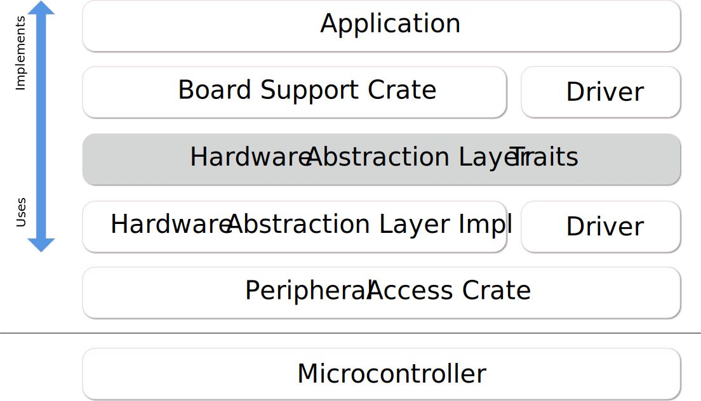

Introduction
Welcome to The Embedded Rust Book: An introductory book about using the Rust Programming Language on "Bare Metal" embedded systems, such as Microcontrollers.
Who Embedded Rust is For
Embedded Rust is for everyone who wants to do embedded programming while taking advantage of the higher-level concepts and safety guarantees the Rust language provides. (See also Who Rust Is For)
Scope
The goals of this book are:
-
Get developers up to speed with embedded Rust development. i.e. How to set up a development environment.
-
Share current best practices about using Rust for embedded development. i.e. How to best use Rust language features to write more correct embedded software.
-
Serve as a cookbook in some cases. e.g. How do I mix C and Rust in a single project?
This book tries to be as general as possible but to make things easier for both the readers and the writers it uses the ARM Cortex-M architecture in all its examples. However, the book doesn't assume that the reader is familiar with this particular architecture and explains details particular to this architecture where required.
Who This Book is For
This book caters towards people with either some embedded background or some Rust background, however we believe everybody curious about embedded Rust programming can get something out of this book. For those without any prior knowledge we suggest you read the "Assumptions and Prerequisites" section and catch up on missing knowledge to get more out of the book and improve your reading experience. You can check out the "Other Resources" section to find resources on topics you might want to catch up on.
Assumptions and Prerequisites
- You are comfortable using the Rust Programming Language, and have written, run, and debugged Rust applications on a desktop environment. You should also be familiar with the idioms of the 2018 edition as this book targets Rust 2018.
- You are comfortable developing and debugging embedded systems in another
language such as C, C++, or Ada, and are familiar with concepts such as:
- Cross Compilation
- Memory Mapped Peripherals
- Interrupts
- Common interfaces such as I2C, SPI, Serial, etc.
Other Resources
If you are unfamiliar with anything mentioned above or if you want more information about a specific topic mentioned in this book you might find some of these resources helpful.
| Topic | Resource | Description |
|---|---|---|
| Rust | Rust Book | If you are not yet comfortable with Rust, we highly suggest reading this book. |
| Rust, Embedded | Discovery Book | If you have never done any embedded programming, this book might be a better start |
| Rust, Embedded | Embedded Rust Bookshelf | Here you can find several other resources provided by Rust's Embedded Working Group. |
| Rust, Embedded | Embedonomicon | The nitty gritty details when doing embedded programming in Rust. |
| Rust, Embedded | embedded FAQ | Frequently asked questions about Rust in an embedded context. |
| Rust, Embedded | Comprehensive Rust ü¶Ä: Bare Metal | Teaching material for a 1-day class on bare-metal Rust development |
| Interrupts | Interrupt | - |
| Memory-mapped IO/Peripherals | Memory-mapped I/O | - |
| SPI, UART, RS232, USB, I2C, TTL | Stack Exchange about SPI, UART, and other interfaces | - |
Translations
This book has been translated by generous volunteers. If you would like your translation listed here, please open a PR to add it.
How to Use This Book
This book generally assumes that you’re reading it front-to-back. Later chapters build on concepts in earlier chapters, and earlier chapters may not dig into details on a topic, revisiting the topic in a later chapter.
This book will be using the STM32F3DISCOVERY development board from STMicroelectronics for the majority of the examples contained within. This board is based on the ARM Cortex-M architecture, and while basic functionality is the same across most CPUs based on this architecture, peripherals and other implementation details of Microcontrollers are different between different vendors, and often even different between Microcontroller families from the same vendor.
For this reason, we suggest purchasing the STM32F3DISCOVERY development board for the purpose of following the examples in this book.
Contributing to This Book
The work on this book is coordinated in this repository and is mainly developed by the resources team.
If you have trouble following the instructions in this book or find that some section of the book is not clear enough or hard to follow then that's a bug and it should be reported in the issue tracker of this book.
Pull requests fixing typos and adding new content are very welcome!
Re-using this material
This book is distributed under the following licenses:
- The code samples and free-standing Cargo projects contained within this book are licensed under the terms of both the MIT License and the Apache License v2.0.
- The written prose, pictures and diagrams contained within this book are licensed under the terms of the Creative Commons CC-BY-SA v4.0 license.
TL;DR: If you want to use our text or images in your work, you need to:
- Give the appropriate credit (i.e. mention this book on your slide, and provide a link to the relevant page)
- Provide a link to the CC-BY-SA v4.0 licence
- Indicate if you have changed the material in any way, and make any changes to our material available under the same licence
Also, please do let us know if you find this book useful!
Meet Your Hardware
Let's get familiar with the hardware we'll be working with.
STM32F3DISCOVERY (the "F3")

What does this board contain?
-
A STM32F303VCT6 microcontroller. This microcontroller has
-
A single-core ARM Cortex-M4F processor with hardware support for single-precision floating point operations and a maximum clock frequency of 72 MHz.
-
256 KiB of "Flash" memory. (1 KiB = 1024 bytes)
-
48 KiB of RAM.
-
A variety of integrated peripherals such as timers, I2C, SPI and USART.
-
General purpose Input Output (GPIO) and other types of pins accessible through the two rows of headers along side the board.
-
A USB interface accessible through the USB port labeled "USB USER".
-
-
An accelerometer as part of the LSM303DLHC chip.
-
A magnetometer as part of the LSM303DLHC chip.
-
8 user LEDs arranged in the shape of a compass.
-
A second microcontroller: a STM32F103. This microcontroller is actually part of an on-board programmer / debugger and is connected to the USB port named "USB ST-LINK".
For a more detailed list of features and further specifications of the board take a look at the STMicroelectronics website.
A word of caution: be careful if you want to apply external signals to the board. The microcontroller STM32F303VCT6 pins take a nominal voltage of 3.3 volts. For further information consult the 6.2 Absolute maximum ratings section in the manual
A no_std Rust Environment
The term Embedded Programming is used for a wide range of different classes of programming. Ranging from programming 8-Bit MCUs (like the ST72325xx) with just a few KB of RAM and ROM, up to systems like the Raspberry Pi (Model B 3+) which has a 32/64-bit 4-core Cortex-A53 @ 1.4 GHz and 1GB of RAM. Different restrictions/limitations will apply when writing code depending on what kind of target and use case you have.
There are two general Embedded Programming classifications:
Hosted Environments
These kinds of environments are close to a normal PC environment. What this means is that you are provided with a System Interface E.G. POSIX that provides you with primitives to interact with various systems, such as file systems, networking, memory management, threads, etc. Standard libraries in turn usually depend on these primitives to implement their functionality. You may also have some sort of sysroot and restrictions on RAM/ROM-usage, and perhaps some special HW or I/Os. Overall it feels like coding on a special-purpose PC environment.
Bare Metal Environments
In a bare metal environment no code has been loaded before your program.
Without the software provided by an OS we can not load the standard library.
Instead the program, along with the crates it uses, can only use the hardware (bare metal) to run.
To prevent rust from loading the standard library use no_std.
The platform-agnostic parts of the standard library are available through libcore.
libcore also excludes things which are not always desirable in an embedded environment.
One of these things is a memory allocator for dynamic memory allocation.
If you require this or any other functionalities there are often crates which provide these.
The libstd Runtime
As mentioned before using libstd requires some sort of system integration, but this is not only because
libstd is just providing a common way of accessing OS abstractions, it also provides a runtime.
This runtime, among other things, takes care of setting up stack overflow protection, processing command line arguments,
and spawning the main thread before a program's main function is invoked. This runtime also won't be available in a no_std environment.
Summary
#![no_std] is a crate-level attribute that indicates that the crate will link to the core-crate instead of the std-crate.
The libcore crate in turn is a platform-agnostic subset of the std crate
which makes no assumptions about the system the program will run on.
As such, it provides APIs for language primitives like floats, strings and slices, as well as APIs that expose processor features
like atomic operations and SIMD instructions. However it lacks APIs for anything that involves platform integration.
Because of these properties no_std and libcore code can be used for any kind of
bootstrapping (stage 0) code like bootloaders, firmware or kernels.
Overview
| feature | no_std | std |
|---|---|---|
| heap (dynamic memory) | * | ✓ |
| collections (Vec, BTreeMap, etc) | ** | ✓ |
| stack overflow protection | ✘ | ✓ |
| runs init code before main | ✘ | ✓ |
| libstd available | ✘ | ✓ |
| libcore available | ✓ | ✓ |
| writing firmware, kernel, or bootloader code | ✓ | ✘ |
* Only if you use the alloc crate and use a suitable allocator like alloc-cortex-m.
** Only if you use the collections crate and configure a global default allocator.
** HashMap and HashSet are not available due to a lack of a secure random number generator.
See Also
Tooling
Dealing with microcontrollers involves using several different tools as we'll be dealing with an architecture different than your laptop's and we'll have to run and debug programs on a remote device.
We'll use all the tools listed below. Any recent version should work when a minimum version is not specified, but we have listed the versions we have tested.
- Rust 1.31, 1.31-beta, or a newer toolchain PLUS ARM Cortex-M compilation support.
cargo-binutils~0.1.4qemu-system-arm. Tested versions: 3.0.0- OpenOCD >=0.8. Tested versions: v0.9.0 and v0.10.0
- GDB with ARM support. Version 7.12 or newer highly recommended. Tested versions: 7.10, 7.11, 7.12 and 8.1
cargo-generateorgit. These tools are optional but will make it easier to follow along with the book.
The text below explains why we are using these tools. Installation instructions can be found on the next page.
cargo-generate OR git
Bare metal programs are non-standard (no_std) Rust programs that require some
adjustments to the linking process in order to get the memory layout of the program
right. This requires some additional files (like linker scripts) and
settings (like linker flags). We have packaged those for you in a template
such that you only need to fill in the missing information (such as the project name and the
characteristics of your target hardware).
Our template is compatible with cargo-generate: a Cargo subcommand for
creating new Cargo projects from templates. You can also download the
template using git, curl, wget, or your web browser.
cargo-binutils
cargo-binutils is a collection of Cargo subcommands that make it easy to use
the LLVM tools that are shipped with the Rust toolchain. These tools include the
LLVM versions of objdump, nm and size and are used for inspecting
binaries.
The advantage of using these tools over GNU binutils is that (a) installing the
LLVM tools is the same one-command installation (rustup component add llvm-tools) regardless of your OS and (b) tools like objdump support
all the architectures that rustc supports -- from ARM to x86_64 -- because
they both share the same LLVM backend.
qemu-system-arm
QEMU is an emulator. In this case we use the variant that can fully emulate ARM systems. We use QEMU to run embedded programs on the host. Thanks to this you can follow some parts of this book even if you don't have any hardware with you!
Tooling for Embedded Rust Debugging
Overview
Debugging embedded systems in Rust requires specialized tools including software to manage the debugging process, debuggers to inspect and control program execution, and hardware probes to facilitate interaction between the host and the embedded device. This document outlines essential software tools like Probe-rs and OpenOCD, which simplify and support the debugging process, alongside prominent debuggers such as GDB and the Probe-rs Visual Studio Code extension. Additionally, it covers key hardware probes such as Rusty-probe, ST-Link, J-Link, and MCU-Link, which are integral for effective debugging and programming of embedded devices.
Software that drives debugging tools
Probe-rs
Probe-rs is a modern, Rust-focused software designed to work with debuggers in embedded systems. Unlike OpenOCD, Probe-rs is built with simplicity in mind and aims to reduce the configuration burden often found in other debugging solutions. It supports various probes and targets, providing a high-level interface for interacting with embedded hardware. Probe-rs integrates directly with Rust tooling, and integrates with Visual Studio Code through its extension, allowing developers to streamline their debugging workflow.
OpenOCD (Open On-Chip Debugger)
OpenOCD is an open-source software tool used for debugging, testing, and programming embedded systems. It provides an interface between the host system and embedded hardware, supporting various transport layers like JTAG and SWD (Serial Wire Debug). OpenOCD integrates with GDB, which is a debugger. OpenOCD is widely supported, with extensive documentation and a large community, but may require complex configuration, especially for custom embedded setups.
Debuggers
A debugger allows developers to inspect and control the execution of a program in order to identify and correct errors or bugs. It provides functionalities such as setting breakpoints, stepping through code line by line, and examining the values of variables and memory states. Debuggers are essential for thorough software development and maintenance, enabling developers to ensure that their code behaves as intended under various conditions.
Debuggers know how to:
- Interact with the memory mapped registers.
- Set Breakpoints/Watchpoints.
- Read and write to the memory mapped registers.
- Detect when the MCU has been halted for a debug event.
- Continue MCU execution after a debug event has been encountered.
- Erase and write to the microcontroller's FLASH.
Probe-rs Visual Studio Code Extension
Probe-rs has a Visual Studio Code extension, providing a seamless debugging experience without extensive setup. Through this connection, developers can use Rust-specific features like pretty printing and detailed error messages, ensuring that their debugging process aligns with the Rust ecosystem.
GDB (GNU Debugger)
GDB is a versatile debugging tool that allows developers to examine the state of programs while they run or after they crash. For embedded Rust, GDB connects to the target system via OpenOCD or other debugging servers to interact with the embedded code. GDB is highly configurable and supports features like remote debugging, variable inspection, and conditional breakpoints. It can be used on a variety of platforms, and has extensive support for Rust-specific debugging needs, such as pretty printing and integration with IDEs.
Probes
A hardware probe is a device used in the development and debugging of embedded systems to facilitate communication between a host computer and the target embedded device. It typically supports protocols like JTAG or SWD, enabling it to program, debug, and analyze the microcontroller or microprocessor on the embedded system. Hardware probes are crucial for developers to set breakpoints, step through code, and inspect memory and processor registers, effectively allowing them to diagnose and fix issues in real-time.
Rusty-probe
Rusty-probe is an open-sourced USB-based hardware debugging probe designed to work with probe-rs. The combination of Rusty-Probe and probe-rs provides an easy-to-use, cost-effective solution for developers working with embedded Rust applications.
ST-Link
The ST-Link is a popular debugging and programming probe developed by STMicroelectronics primarily for their STM32 and STM8 microcontroller series. It supports both debugging and programming via JTAG or SWD (Serial Wire Debug) interfaces. ST-Link is widely used due to its direct support from STMicroelectronics' extensive range of development boards and its integration into major IDEs, making it a convenient choice for developers working with STM microcontrollers.
J-Link
J-Link, developed by SEGGER Microcontroller, is a robust and versatile debugger supporting a wide range of CPU cores and devices beyond just ARM, such as RISC-V. Known for its high performance and reliability, J-Link supports various communication interfaces, including JTAG, SWD, and fine-pitch JTAG interfaces. It is favored for its advanced features like unlimited breakpoints in flash memory and its compatibility with a multitude of development environments.
MCU-Link
MCU-Link is a debugging probe that also functions as a programmer, provided by NXP Semiconductors. It supports a variety of ARM Cortex microcontrollers and interfaces seamlessly with development tools like MCUXpresso IDE. MCU-Link is particularly notable for its versatility and affordability, making it an accessible option for hobbyists, educators, and professional developers alike.
Installing the tools
This page contains OS-agnostic installation instructions for a few of the tools:
Rust Toolchain
Install rustup by following the instructions at https://rustup.rs.
NOTE Make sure you have a compiler version equal to or newer than 1.31. rustc -V should return a date newer than the one shown below.
$ rustc -V
rustc 1.31.1 (b6c32da9b 2018-12-18)
For bandwidth and disk usage concerns the default installation only supports
native compilation. To add cross compilation support for the ARM Cortex-M
architectures choose one of the following compilation targets. For the STM32F3DISCOVERY
board used for the examples in this book, use the thumbv7em-none-eabihf target.
Find the best Cortex-M for you.
Cortex-M0, M0+, and M1 (ARMv6-M architecture):
rustup target add thumbv6m-none-eabi
Cortex-M3 (ARMv7-M architecture):
rustup target add thumbv7m-none-eabi
Cortex-M4 and M7 without hardware floating point (ARMv7E-M architecture):
rustup target add thumbv7em-none-eabi
Cortex-M4F and M7F with hardware floating point (ARMv7E-M architecture):
rustup target add thumbv7em-none-eabihf
Cortex-M23 (ARMv8-M architecture):
rustup target add thumbv8m.base-none-eabi
Cortex-M33 and M35P (ARMv8-M architecture):
rustup target add thumbv8m.main-none-eabi
Cortex-M33F and M35PF with hardware floating point (ARMv8-M architecture):
rustup target add thumbv8m.main-none-eabihf
cargo-binutils
cargo install cargo-binutils
rustup component add llvm-tools
WINDOWS: prerequisite C++ Build Tools for Visual Studio 2019 is installed. https://visualstudio.microsoft.com/thank-you-downloading-visual-studio/?sku=BuildTools&rel=16
cargo-generate
We'll use this later to generate a project from a template.
cargo install cargo-generate
Note: on some Linux distros (e.g. Ubuntu) you may need to install the packages libssl-dev and pkg-config prior to installing cargo-generate.
OS-Specific Instructions
Now follow the instructions specific to the OS you are using:
Linux
Here are the installation commands for a few Linux distributions.
Packages
- Ubuntu 18.04 or newer / Debian stretch or newer
NOTE
gdb-multiarchis the GDB command you'll use to debug your ARM Cortex-M programs
sudo apt install gdb-multiarch openocd qemu-system-arm
- Ubuntu 14.04 and 16.04
NOTE
arm-none-eabi-gdbis the GDB command you'll use to debug your ARM Cortex-M programs
sudo apt install gdb-arm-none-eabi openocd qemu-system-arm
- Fedora 27 or newer
sudo dnf install gdb openocd qemu-system-arm
- Arch Linux
NOTE
arm-none-eabi-gdbis the GDB command you'll use to debug ARM Cortex-M programs
sudo pacman -S arm-none-eabi-gdb qemu-system-arm openocd
udev rules
This rule lets you use OpenOCD with the Discovery board without root privilege.
Create the file /etc/udev/rules.d/70-st-link.rules with the contents shown below.
# STM32F3DISCOVERY rev A/B - ST-LINK/V2
ATTRS{idVendor}=="0483", ATTRS{idProduct}=="3748", TAG+="uaccess"
# STM32F3DISCOVERY rev C+ - ST-LINK/V2-1
ATTRS{idVendor}=="0483", ATTRS{idProduct}=="374b", TAG+="uaccess"
Then reload all the udev rules with:
sudo udevadm control --reload-rules
If you had the board plugged to your laptop, unplug it and then plug it again.
You can check the permissions by running this command:
lsusb
Which should show something like
(..)
Bus 001 Device 018: ID 0483:374b STMicroelectronics ST-LINK/V2.1
(..)
Take note of the bus and device numbers. Use those numbers to create a path like
/dev/bus/usb/<bus>/<device>. Then use this path like so:
ls -l /dev/bus/usb/001/018
crw-------+ 1 root root 189, 17 Sep 13 12:34 /dev/bus/usb/001/018
getfacl /dev/bus/usb/001/018 | grep user
user::rw-
user:you:rw-
The + appended to permissions indicates the existence of an extended
permission. The getfacl command tells the user you can make use of
this device.
Now, go to the next section.
macOS
All the tools can be installed using Homebrew or MacPorts:
Install tools with Homebrew
$ # GDB
$ brew install arm-none-eabi-gdb
$ # OpenOCD
$ brew install openocd
$ # QEMU
$ brew install qemu
NOTE If OpenOCD crashes you may need to install the latest version using:
$ brew install --HEAD openocd
Install tools with MacPorts
$ # GDB
$ sudo port install arm-none-eabi-gcc
$ # OpenOCD
$ sudo port install openocd
$ # QEMU
$ sudo port install qemu
That's all! Go to the next section.
Windows
arm-none-eabi-gdb
ARM provides .exe installers for Windows. Grab one from here, and follow the instructions.
Just before the installation process finishes tick/select the "Add path to environment variable"
option. Then verify that the tools are in your %PATH%:
$ arm-none-eabi-gdb -v
GNU gdb (GNU Tools for Arm Embedded Processors 7-2018-q2-update) 8.1.0.20180315-git
(..)
OpenOCD
There's no official binary release of OpenOCD for Windows but if you're not in the mood to compile
it yourself, the xPack project provides a binary distribution, here. Follow the
provided installation instructions. Then update your %PATH% environment variable to
include the path where the binaries were installed. (C:\Users\USERNAME\AppData\Roaming\xPacks\@xpack-dev-tools\openocd\0.10.0-13.1\.content\bin\,
if you've been using the easy install)
Verify that OpenOCD is in your %PATH% with:
$ openocd -v
Open On-Chip Debugger 0.10.0
(..)
QEMU
Grab QEMU from the official website.
ST-LINK USB driver
You'll also need to install this USB driver or OpenOCD won't work. Follow the installer instructions and make sure you install the right version (32-bit or 64-bit) of the driver.
That's all! Go to the next section.
Verify Installation
In this section we check that some of the required tools / drivers have been correctly installed and configured.
Connect your laptop / PC to the discovery board using a Mini-USB USB cable. The discovery board has two USB connectors; use the one labeled "USB ST-LINK" that sits on the center of the edge of the board.
Also check that the ST-LINK header is populated. See the picture below; the ST-LINK header is highlighted.

Now run the following command:
openocd -f interface/stlink.cfg -f target/stm32f3x.cfg
NOTE: Old versions of openocd, including the 0.10.0 release from 2017, do not contain the new (and preferable)
interface/stlink.cfgfile; instead you may need to useinterface/stlink-v2.cfgorinterface/stlink-v2-1.cfg.
You should get the following output and the program should block the console:
Open On-Chip Debugger 0.10.0
Licensed under GNU GPL v2
For bug reports, read
http://openocd.org/doc/doxygen/bugs.html
Info : auto-selecting first available session transport "hla_swd". To override use 'transport select <transport>'.
adapter speed: 1000 kHz
adapter_nsrst_delay: 100
Info : The selected transport took over low-level target control. The results might differ compared to plain JTAG/SWD
none separate
Info : Unable to match requested speed 1000 kHz, using 950 kHz
Info : Unable to match requested speed 1000 kHz, using 950 kHz
Info : clock speed 950 kHz
Info : STLINK v2 JTAG v27 API v2 SWIM v15 VID 0x0483 PID 0x374B
Info : using stlink api v2
Info : Target voltage: 2.919881
Info : stm32f3x.cpu: hardware has 6 breakpoints, 4 watchpoints
The contents may not match exactly but you should get the last line about breakpoints and watchpoints. If you got it then terminate the OpenOCD process and move to the next section.
If you didn't get the "breakpoints" line then try one of the following commands.
openocd -f interface/stlink-v2.cfg -f target/stm32f3x.cfg
openocd -f interface/stlink-v2-1.cfg -f target/stm32f3x.cfg
If one of those commands works it means you got an old hardware revision of the discovery board. That won't be a problem but commit that fact to memory as you'll need to configure things a bit differently later on. You can move to the next section.
If none of the commands work as a normal user then try to run them with root
permission (e.g. sudo openocd ..). If the commands do work with root
permission then check that the udev rules have been correctly set.
If you have reached this point and OpenOCD is not working please open an issue and we'll help you out!
Getting Started
In this section we'll walk you through the process of writing, building, flashing and debugging embedded programs. You will be able to try most of the examples without any special hardware as we will show you the basics using QEMU, a popular open-source hardware emulator. The only section where hardware is required is, naturally enough, the Hardware section, where we use OpenOCD to program an STM32F3DISCOVERY.
QEMU
We'll start writing a program for the LM3S6965, a Cortex-M3 microcontroller. We have chosen this as our initial target because it can be emulated using QEMU so you don't need to fiddle with hardware in this section and we can focus on the tooling and the development process.
IMPORTANT We'll use the name "app" for the project name in this tutorial. Whenever you see the word "app" you should replace it with the name you selected for your project. Or, you could also name your project "app" and avoid the substitutions.
Creating a non standard Rust program
We'll use the cortex-m-quickstart project template to generate a new
project from it. The created project will contain a barebone application: a good
starting point for a new embedded rust application. In addition, the project will
contain an examples directory, with several separate applications, highlighting
some of the key embedded rust functionality.
Using cargo-generate
First install cargo-generate
cargo install cargo-generate
Then generate a new project
cargo generate --git https://github.com/rust-embedded/cortex-m-quickstart
Project Name: app
Creating project called `app`...
Done! New project created /tmp/app
cd app
Using git
Clone the repository
git clone https://github.com/rust-embedded/cortex-m-quickstart app
cd app
And then fill in the placeholders in the Cargo.toml file
[package]
authors = ["{{authors}}"] # "{{authors}}" -> "John Smith"
edition = "2018"
name = "{{project-name}}" # "{{project-name}}" -> "app"
version = "0.1.0"
# ..
[[bin]]
name = "{{project-name}}" # "{{project-name}}" -> "app"
test = false
bench = false
Using neither
Grab the latest snapshot of the cortex-m-quickstart template and extract it.
curl -LO https://github.com/rust-embedded/cortex-m-quickstart/archive/master.zip
unzip master.zip
mv cortex-m-quickstart-master app
cd app
Or you can browse to cortex-m-quickstart, click the green "Clone or
download" button and then click "Download ZIP".
Then fill in the placeholders in the Cargo.toml file as done in the second
part of the "Using git" version.
Program Overview
For convenience here are the most important parts of the source code in src/main.rs:
#![no_std]
#![no_main]
use panic_halt as _;
use cortex_m_rt::entry;
#[entry]
fn main() -> ! {
loop {
// your code goes here
}
}This program is a bit different from a standard Rust program so let's take a closer look.
#![no_std] indicates that this program will not link to the standard crate,
std. Instead it will link to its subset: the core crate.
#![no_main] indicates that this program won't use the standard main
interface that most Rust programs use. The main (no pun intended) reason to go
with no_main is that using the main interface in no_std context requires
nightly.
use panic_halt as _;. This crate provides a panic_handler that defines
the panicking behavior of the program. We will cover this in more detail in the
Panicking chapter of the book.
#[entry] is an attribute provided by the cortex-m-rt crate that's used
to mark the entry point of the program. As we are not using the standard main
interface we need another way to indicate the entry point of the program and
that'd be #[entry].
fn main() -> !. Our program will be the only process running on the target
hardware so we don't want it to end! We use a divergent function (the -> !
bit in the function signature) to ensure at compile time that'll be the case.
Cross compiling
The next step is to cross compile the program for the Cortex-M3 architecture.
That's as simple as running cargo build --target $TRIPLE if you know what the
compilation target ($TRIPLE) should be. Luckily, the .cargo/config.toml in the
template has the answer:
tail -n6 .cargo/config.toml
[build]
# Pick ONE of these compilation targets
# target = "thumbv6m-none-eabi" # Cortex-M0 and Cortex-M0+
target = "thumbv7m-none-eabi" # Cortex-M3
# target = "thumbv7em-none-eabi" # Cortex-M4 and Cortex-M7 (no FPU)
# target = "thumbv7em-none-eabihf" # Cortex-M4F and Cortex-M7F (with FPU)
To cross compile for the Cortex-M3 architecture we have to use
thumbv7m-none-eabi. That target is not automatically installed when installing
the Rust toolchain, it would now be a good time to add that target to the toolchain,
if you haven't done it yet:
rustup target add thumbv7m-none-eabi
Since the thumbv7m-none-eabi compilation target has been set as the default in
your .cargo/config.toml file, the two commands below do the same:
cargo build --target thumbv7m-none-eabi
cargo build
Inspecting
Now we have a non-native ELF binary in target/thumbv7m-none-eabi/debug/app. We
can inspect it using cargo-binutils.
With cargo-readobj we can print the ELF headers to confirm that this is an ARM
binary.
cargo readobj --bin app -- --file-headers
Note that:
--bin appis sugar for inspect the binary attarget/$TRIPLE/debug/app--bin appwill also (re)compile the binary, if necessary
ELF Header:
Magic: 7f 45 4c 46 01 01 01 00 00 00 00 00 00 00 00 00
Class: ELF32
Data: 2's complement, little endian
Version: 1 (current)
OS/ABI: UNIX - System V
ABI Version: 0x0
Type: EXEC (Executable file)
Machine: ARM
Version: 0x1
Entry point address: 0x405
Start of program headers: 52 (bytes into file)
Start of section headers: 153204 (bytes into file)
Flags: 0x5000200
Size of this header: 52 (bytes)
Size of program headers: 32 (bytes)
Number of program headers: 2
Size of section headers: 40 (bytes)
Number of section headers: 19
Section header string table index: 18
cargo-size can print the size of the linker sections of the binary.
cargo size --bin app --release -- -A
we use --release to inspect the optimized version
app :
section size addr
.vector_table 1024 0x0
.text 92 0x400
.rodata 0 0x45c
.data 0 0x20000000
.bss 0 0x20000000
.debug_str 2958 0x0
.debug_loc 19 0x0
.debug_abbrev 567 0x0
.debug_info 4929 0x0
.debug_ranges 40 0x0
.debug_macinfo 1 0x0
.debug_pubnames 2035 0x0
.debug_pubtypes 1892 0x0
.ARM.attributes 46 0x0
.debug_frame 100 0x0
.debug_line 867 0x0
Total 14570
A refresher on ELF linker sections
.textcontains the program instructions.rodatacontains constant values like strings.datacontains statically allocated variables whose initial values are not zero.bssalso contains statically allocated variables whose initial values are zero.vector_tableis a non-standard section that we use to store the vector (interrupt) table.ARM.attributesand the.debug_*sections contain metadata and will not be loaded onto the target when flashing the binary.
IMPORTANT: ELF files contain metadata like debug information so their size
on disk does not accurately reflect the space the program will occupy when
flashed on a device. Always use cargo-size to check how big a binary really
is.
cargo-objdump can be used to disassemble the binary.
cargo objdump --bin app --release -- --disassemble --no-show-raw-insn --print-imm-hex
NOTE if the above command complains about
Unknown command line argumentsee the following bug report: https://github.com/rust-embedded/book/issues/269
NOTE this output can differ on your system. New versions of rustc, LLVM and libraries can generate different assembly. We truncated some of the instructions to keep the snippet small.
app: file format ELF32-arm-little
Disassembly of section .text:
main:
400: bl #0x256
404: b #-0x4 <main+0x4>
Reset:
406: bl #0x24e
40a: movw r0, #0x0
< .. truncated any more instructions .. >
DefaultHandler_:
656: b #-0x4 <DefaultHandler_>
UsageFault:
657: strb r7, [r4, #0x3]
DefaultPreInit:
658: bx lr
__pre_init:
659: strb r7, [r0, #0x1]
__nop:
65a: bx lr
HardFaultTrampoline:
65c: mrs r0, msp
660: b #-0x2 <HardFault_>
HardFault_:
662: b #-0x4 <HardFault_>
HardFault:
663: <unknown>
Running
Next, let's see how to run an embedded program on QEMU! This time we'll use the
hello example which actually does something.
For convenience here's the source code of examples/hello.rs:
//! Prints "Hello, world!" on the host console using semihosting
#![no_main]
#![no_std]
use panic_halt as _;
use cortex_m_rt::entry;
use cortex_m_semihosting::{debug, hprintln};
#[entry]
fn main() -> ! {
hprintln!("Hello, world!").unwrap();
// exit QEMU
// NOTE do not run this on hardware; it can corrupt OpenOCD state
debug::exit(debug::EXIT_SUCCESS);
loop {}
}This program uses something called semihosting to print text to the host console. When using real hardware this requires a debug session but when using QEMU this Just Works.
Let's start by compiling the example:
cargo build --example hello
The output binary will be located at
target/thumbv7m-none-eabi/debug/examples/hello.
To run this binary on QEMU run the following command:
qemu-system-arm \
-cpu cortex-m3 \
-machine lm3s6965evb \
-nographic \
-semihosting-config enable=on,target=native \
-kernel target/thumbv7m-none-eabi/debug/examples/hello
Hello, world!
The command should successfully exit (exit code = 0) after printing the text. On *nix you can check that with the following command:
echo $?
0
Let's break down that QEMU command:
-
qemu-system-arm. This is the QEMU emulator. There are a few variants of these QEMU binaries; this one does full system emulation of ARM machines hence the name. -
-cpu cortex-m3. This tells QEMU to emulate a Cortex-M3 CPU. Specifying the CPU model lets us catch some miscompilation errors: for example, running a program compiled for the Cortex-M4F, which has a hardware FPU, will make QEMU error during its execution. -
-machine lm3s6965evb. This tells QEMU to emulate the LM3S6965EVB, an evaluation board that contains a LM3S6965 microcontroller. -
-nographic. This tells QEMU to not launch its GUI. -
-semihosting-config (..). This tells QEMU to enable semihosting. Semihosting lets the emulated device, among other things, use the host stdout, stderr and stdin and create files on the host. -
-kernel $file. This tells QEMU which binary to load and run on the emulated machine.
Typing out that long QEMU command is too much work! We can set a custom runner
to simplify the process. .cargo/config.toml has a commented out runner that invokes
QEMU; let's uncomment it:
head -n3 .cargo/config.toml
[target.thumbv7m-none-eabi]
# uncomment this to make `cargo run` execute programs on QEMU
runner = "qemu-system-arm -cpu cortex-m3 -machine lm3s6965evb -nographic -semihosting-config enable=on,target=native -kernel"
This runner only applies to the thumbv7m-none-eabi target, which is our
default compilation target. Now cargo run will compile the program and run it
on QEMU:
cargo run --example hello --release
Compiling app v0.1.0 (file:///tmp/app)
Finished release [optimized + debuginfo] target(s) in 0.26s
Running `qemu-system-arm -cpu cortex-m3 -machine lm3s6965evb -nographic -semihosting-config enable=on,target=native -kernel target/thumbv7m-none-eabi/release/examples/hello`
Hello, world!
Debugging
Debugging is critical to embedded development. Let's see how it's done.
Debugging an embedded device involves remote debugging as the program that we want to debug won't be running on the machine that's running the debugger program (GDB or LLDB).
Remote debugging involves a client and a server. In a QEMU setup, the client will be a GDB (or LLDB) process and the server will be the QEMU process that's also running the embedded program.
In this section we'll use the hello example we already compiled.
The first debugging step is to launch QEMU in debugging mode:
qemu-system-arm \
-cpu cortex-m3 \
-machine lm3s6965evb \
-nographic \
-semihosting-config enable=on,target=native \
-gdb tcp::3333 \
-S \
-kernel target/thumbv7m-none-eabi/debug/examples/hello
This command won't print anything to the console and will block the terminal. We have passed two extra flags this time:
-
-gdb tcp::3333. This tells QEMU to wait for a GDB connection on TCP port 3333. -
-S. This tells QEMU to freeze the machine at startup. Without this the program would have reached the end of main before we had a chance to launch the debugger!
Next we launch GDB in another terminal and tell it to load the debug symbols of the example:
gdb-multiarch -q target/thumbv7m-none-eabi/debug/examples/hello
NOTE: you might need another version of gdb instead of gdb-multiarch depending
on which one you installed in the installation chapter. This could also be
arm-none-eabi-gdb or just gdb.
Then within the GDB shell we connect to QEMU, which is waiting for a connection on TCP port 3333.
target remote :3333
Remote debugging using :3333
Reset () at $REGISTRY/cortex-m-rt-0.6.1/src/lib.rs:473
473 pub unsafe extern "C" fn Reset() -> ! {
You'll see that the process is halted and that the program counter is pointing
to a function named Reset. That is the reset handler: what Cortex-M cores
execute upon booting.
Note that on some setup, instead of displaying the line
Reset () at $REGISTRY/cortex-m-rt-0.6.1/src/lib.rs:473as shown above, gdb may print some warnings like :
core::num::bignum::Big32x40::mul_small () at src/libcore/num/bignum.rs:254src/libcore/num/bignum.rs: No such file or directory.That's a known glitch. You can safely ignore those warnings, you're most likely at Reset().
This reset handler will eventually call our main function. Let's skip all the
way there using a breakpoint and the continue command. To set the breakpoint, let's first take a look where we would like to break in our code, with the list command.
list main
This will show the source code, from the file examples/hello.rs.
6 use panic_halt as _;
7
8 use cortex_m_rt::entry;
9 use cortex_m_semihosting::{debug, hprintln};
10
11 #[entry]
12 fn main() -> ! {
13 hprintln!("Hello, world!").unwrap();
14
15 // exit QEMU
We would like to add a breakpoint just before the "Hello, world!", which is on line 13. We do that with the break command:
break 13
We can now instruct gdb to run up to our main function, with the continue command:
continue
Continuing.
Breakpoint 1, hello::__cortex_m_rt_main () at examples\hello.rs:13
13 hprintln!("Hello, world!").unwrap();
We are now close to the code that prints "Hello, world!". Let's move forward
using the next command.
next
16 debug::exit(debug::EXIT_SUCCESS);
At this point you should see "Hello, world!" printed on the terminal that's
running qemu-system-arm.
$ qemu-system-arm (..)
Hello, world!
Calling next again will terminate the QEMU process.
next
[Inferior 1 (Remote target) exited normally]
You can now exit the GDB session.
quit
Hardware
By now you should be somewhat familiar with the tooling and the development process. In this section we'll switch to real hardware; the process will remain largely the same. Let's dive in.
Know your hardware
Before we begin you need to identify some characteristics of the target device as these will be used to configure the project:
-
The ARM core. e.g. Cortex-M3.
-
Does the ARM core include an FPU? Cortex-M4F and Cortex-M7F cores do.
-
How much Flash memory and RAM does the target device have? e.g. 256 KiB of Flash and 32 KiB of RAM.
-
Where are Flash memory and RAM mapped in the address space? e.g. RAM is commonly located at address
0x2000_0000.
You can find this information in the data sheet or the reference manual of your device.
In this section we'll be using our reference hardware, the STM32F3DISCOVERY. This board contains an STM32F303VCT6 microcontroller. This microcontroller has:
-
A Cortex-M4F core that includes a single precision FPU
-
256 KiB of Flash located at address 0x0800_0000.
-
40 KiB of RAM located at address 0x2000_0000. (There's another RAM region but for simplicity we'll ignore it).
Configuring
We'll start from scratch with a fresh template instance. Refer to the
previous section on QEMU for a refresher on how to do this without
cargo-generate.
$ cargo generate --git https://github.com/rust-embedded/cortex-m-quickstart
Project Name: app
Creating project called `app`...
Done! New project created /tmp/app
$ cd app
Step number one is to set a default compilation target in .cargo/config.toml.
tail -n5 .cargo/config.toml
# Pick ONE of these compilation targets
# target = "thumbv6m-none-eabi" # Cortex-M0 and Cortex-M0+
# target = "thumbv7m-none-eabi" # Cortex-M3
# target = "thumbv7em-none-eabi" # Cortex-M4 and Cortex-M7 (no FPU)
target = "thumbv7em-none-eabihf" # Cortex-M4F and Cortex-M7F (with FPU)
We'll use thumbv7em-none-eabihf as that covers the Cortex-M4F core.
NOTE: As you may remember from the previous chapter, we have to install all targets and this is a new one. So don't forget to run the installation process
rustup target add thumbv7em-none-eabihffor this target.
The second step is to enter the memory region information into the memory.x
file.
$ cat memory.x
/* Linker script for the STM32F303VCT6 */
MEMORY
{
/* NOTE 1 K = 1 KiBi = 1024 bytes */
FLASH : ORIGIN = 0x08000000, LENGTH = 256K
RAM : ORIGIN = 0x20000000, LENGTH = 40K
}
NOTE: If you for some reason changed the
memory.xfile after you had made the first build of a specific build target, then docargo cleanbeforecargo build, becausecargo buildmay not track updates ofmemory.x.
We'll start with the hello example again, but first we have to make a small change.
In examples/hello.rs, make sure the debug::exit() call is commented out or
removed. It is used only for running in QEMU.
#[entry]
fn main() -> ! {
hprintln!("Hello, world!").unwrap();
// exit QEMU
// NOTE do not run this on hardware; it can corrupt OpenOCD state
// debug::exit(debug::EXIT_SUCCESS);
loop {}
}You can now cross compile programs using cargo build
and inspect the binaries using cargo-binutils as you did before. The
cortex-m-rt crate handles all the magic required to get your chip running,
as helpfully, pretty much all Cortex-M CPUs boot in the same fashion.
cargo build --example hello
Debugging
Debugging will look a bit different. In fact, the first steps can look different depending on the target device. In this section we'll show the steps required to debug a program running on the STM32F3DISCOVERY. This is meant to serve as a reference; for device specific information about debugging check out the Debugonomicon.
As before we'll do remote debugging and the client will be a GDB process. This time, however, the server will be OpenOCD.
As done during the verify section connect the discovery board to your laptop / PC and check that the ST-LINK header is populated.
On a terminal run openocd to connect to the ST-LINK on the discovery board.
Run this command from the root of the template; openocd will pick up the
openocd.cfg file which indicates which interface file and target file to use.
cat openocd.cfg
# Sample OpenOCD configuration for the STM32F3DISCOVERY development board
# Depending on the hardware revision you got you'll have to pick ONE of these
# interfaces. At any time only one interface should be commented out.
# Revision C (newer revision)
source [find interface/stlink.cfg]
# Revision A and B (older revisions)
# source [find interface/stlink-v2.cfg]
source [find target/stm32f3x.cfg]
NOTE If you found out that you have an older revision of the discovery board during the verify section then you should modify the
openocd.cfgfile at this point to useinterface/stlink-v2.cfg.
$ openocd
Open On-Chip Debugger 0.10.0
Licensed under GNU GPL v2
For bug reports, read
http://openocd.org/doc/doxygen/bugs.html
Info : auto-selecting first available session transport "hla_swd". To override use 'transport select <transport>'.
adapter speed: 1000 kHz
adapter_nsrst_delay: 100
Info : The selected transport took over low-level target control. The results might differ compared to plain JTAG/SWD
none separate
Info : Unable to match requested speed 1000 kHz, using 950 kHz
Info : Unable to match requested speed 1000 kHz, using 950 kHz
Info : clock speed 950 kHz
Info : STLINK v2 JTAG v27 API v2 SWIM v15 VID 0x0483 PID 0x374B
Info : using stlink api v2
Info : Target voltage: 2.913879
Info : stm32f3x.cpu: hardware has 6 breakpoints, 4 watchpoints
On another terminal run GDB, also from the root of the template.
gdb-multiarch -q target/thumbv7em-none-eabihf/debug/examples/hello
NOTE: like before you might need another version of gdb instead of gdb-multiarch depending
on which one you installed in the installation chapter. This could also be
arm-none-eabi-gdb or just gdb.
Next connect GDB to OpenOCD, which is waiting for a TCP connection on port 3333.
(gdb) target remote :3333
Remote debugging using :3333
0x00000000 in ?? ()
Now proceed to flash (load) the program onto the microcontroller using the
load command.
(gdb) load
Loading section .vector_table, size 0x400 lma 0x8000000
Loading section .text, size 0x1518 lma 0x8000400
Loading section .rodata, size 0x414 lma 0x8001918
Start address 0x08000400, load size 7468
Transfer rate: 13 KB/sec, 2489 bytes/write.
The program is now loaded. This program uses semihosting so before we do any
semihosting call we have to tell OpenOCD to enable semihosting. You can send
commands to OpenOCD using the monitor command.
(gdb) monitor arm semihosting enable
semihosting is enabled
You can see all the OpenOCD commands by invoking the
monitor helpcommand.
Like before we can skip all the way to main using a breakpoint and the
continue command.
(gdb) break main
Breakpoint 1 at 0x8000490: file examples/hello.rs, line 11.
Note: automatically using hardware breakpoints for read-only addresses.
(gdb) continue
Continuing.
Breakpoint 1, hello::__cortex_m_rt_main_trampoline () at examples/hello.rs:11
11 #[entry]
NOTE If GDB blocks the terminal instead of hitting the breakpoint after you issue the
continuecommand above, you might want to double check that the memory region information in thememory.xfile is correctly set up for your device (both the starts and lengths).
Step into the main function with step.
(gdb) step
halted: PC: 0x08000496
hello::__cortex_m_rt_main () at examples/hello.rs:13
13 hprintln!("Hello, world!").unwrap();
After advancing the program with next you should see "Hello, world!" printed on the OpenOCD console,
among other stuff.
$ openocd
(..)
Info : halted: PC: 0x08000502
Hello, world!
Info : halted: PC: 0x080004ac
Info : halted: PC: 0x080004ae
Info : halted: PC: 0x080004b0
Info : halted: PC: 0x080004b4
Info : halted: PC: 0x080004b8
Info : halted: PC: 0x080004bc
The message is only displayed once as the program is about to enter the infinite loop defined in line 19: loop {}
You can now exit GDB using the quit command.
(gdb) quit
A debugging session is active.
Inferior 1 [Remote target] will be detached.
Quit anyway? (y or n)
Debugging now requires a few more steps so we have packed all those steps into a
single GDB script named openocd.gdb. The file was created during the cargo generate step, and should work without any modifications. Let's have a peek:
cat openocd.gdb
target extended-remote :3333
# print demangled symbols
set print asm-demangle on
# detect unhandled exceptions, hard faults and panics
break DefaultHandler
break HardFault
break rust_begin_unwind
monitor arm semihosting enable
load
# start the process but immediately halt the processor
stepi
Now running <gdb> -x openocd.gdb target/thumbv7em-none-eabihf/debug/examples/hello will immediately connect GDB to
OpenOCD, enable semihosting, load the program and start the process.
Alternatively, you can turn <gdb> -x openocd.gdb into a custom runner to make
cargo run build a program and start a GDB session. This runner is included
in .cargo/config.toml but it's commented out.
head -n10 .cargo/config.toml
[target.thumbv7m-none-eabi]
# uncomment this to make `cargo run` execute programs on QEMU
# runner = "qemu-system-arm -cpu cortex-m3 -machine lm3s6965evb -nographic -semihosting-config enable=on,target=native -kernel"
[target.'cfg(all(target_arch = "arm", target_os = "none"))']
# uncomment ONE of these three option to make `cargo run` start a GDB session
# which option to pick depends on your system
runner = "arm-none-eabi-gdb -x openocd.gdb"
# runner = "gdb-multiarch -x openocd.gdb"
# runner = "gdb -x openocd.gdb"
$ cargo run --example hello
(..)
Loading section .vector_table, size 0x400 lma 0x8000000
Loading section .text, size 0x1e70 lma 0x8000400
Loading section .rodata, size 0x61c lma 0x8002270
Start address 0x800144e, load size 10380
Transfer rate: 17 KB/sec, 3460 bytes/write.
(gdb)
Memory Mapped Registers
Embedded systems can only get so far by executing normal Rust code and moving data around in RAM. If we want to get any information into or out of our system (be that blinking an LED, detecting a button press or communicating with an off-chip peripheral on some sort of bus) we're going to have to dip into the world of Peripherals and their 'memory mapped registers'.
You may well find that the code you need to access the peripherals in your micro-controller has already been written, at one of the following levels:

- Micro-architecture Crate - This sort of crate handles any useful routines common to the processor core your microcontroller is using, as well as any peripherals that are common to all micro-controllers that use that particular type of processor core. For example the cortex-m crate gives you functions to enable and disable interrupts, which are the same for all Cortex-M based micro-controllers. It also gives you access to the 'SysTick' peripheral included with all Cortex-M based micro-controllers.
- Peripheral Access Crate (PAC) - This sort of crate is a thin wrapper over the various memory-wrapper registers defined for your particular part-number of micro-controller you are using. For example, tm4c123x for the Texas Instruments Tiva-C TM4C123 series, or stm32f30x for the ST-Micro STM32F30x series. Here, you'll be interacting with the registers directly, following each peripheral's operating instructions given in your micro-controller's Technical Reference Manual.
- HAL Crate - These crates offer a more user-friendly API for your particular processor, often by implementing some common traits defined in embedded-hal. For example, this crate might offer a
Serialstruct, with a constructor that takes an appropriate set of GPIO pins and a baud rate, and offers some sort ofwrite_bytefunction for sending data. See the chapter on Portability for more information on embedded-hal. - Board Crate - These crates go one step further than a HAL Crate by pre-configuring various peripherals and GPIO pins to suit the specific developer kit or board you are using, such as stm32f3-discovery for the STM32F3DISCOVERY board.
Board Crate
A board crate is the perfect starting point, if you're new to embedded Rust. They nicely abstract the HW details that might be overwhelming when starting studying this subject, and makes standard tasks easy, like turning a LED on or off. The functionality it exposes varies a lot between boards. Since this book aims at staying hardware agnostic, the board crates won't be covered by this book.
If you want to experiment with the STM32F3DISCOVERY board, it is highly recommended to take a look at the stm32f3-discovery board crate, which provides functionality to blink the board LEDs, access its compass, bluetooth and more. The Discovery book offers a great introduction to the use of a board crate.
But if you're working on a system that doesn't yet have dedicated board crate, or you need functionality not provided by existing crates, read on as we start from the bottom, with the micro-architecture crates.
Micro-architecture crate
Let's look at the SysTick peripheral that's common to all Cortex-M based micro-controllers. We can find a pretty low-level API in the cortex-m crate, and we can use it like this:
#![no_std]
#![no_main]
use cortex_m::peripheral::{syst, Peripherals};
use cortex_m_rt::entry;
use panic_halt as _;
#[entry]
fn main() -> ! {
let peripherals = Peripherals::take().unwrap();
let mut systick = peripherals.SYST;
systick.set_clock_source(syst::SystClkSource::Core);
systick.set_reload(1_000);
systick.clear_current();
systick.enable_counter();
while !systick.has_wrapped() {
// Loop
}
loop {}
}The functions on the SYST struct map pretty closely to the functionality defined by the ARM Technical Reference Manual for this peripheral. There's nothing in this API about 'delaying for X milliseconds' - we have to crudely implement that ourselves using a while loop. Note that we can't access our SYST struct until we have called Peripherals::take() - this is a special routine that guarantees that there is only one SYST structure in our entire program. For more on that, see the Peripherals section.
Using a Peripheral Access Crate (PAC)
We won't get very far with our embedded software development if we restrict ourselves to only the basic peripherals included with every Cortex-M. At some point, we're going to need to write some code that's specific to the particular micro-controller we're using. In this example, let's assume we have an Texas Instruments TM4C123 - a middling 80MHz Cortex-M4 with 256 KiB of Flash. We're going to pull in the tm4c123x crate to make use of this chip.
#![no_std]
#![no_main]
use panic_halt as _; // panic handler
use cortex_m_rt::entry;
use tm4c123x;
#[entry]
pub fn init() -> (Delay, Leds) {
let cp = cortex_m::Peripherals::take().unwrap();
let p = tm4c123x::Peripherals::take().unwrap();
let pwm = p.PWM0;
pwm.ctl.write(|w| w.globalsync0().clear_bit());
// Mode = 1 => Count up/down mode
pwm._2_ctl.write(|w| w.enable().set_bit().mode().set_bit());
pwm._2_gena.write(|w| w.actcmpau().zero().actcmpad().one());
// 528 cycles (264 up and down) = 4 loops per video line (2112 cycles)
pwm._2_load.write(|w| unsafe { w.load().bits(263) });
pwm._2_cmpa.write(|w| unsafe { w.compa().bits(64) });
pwm.enable.write(|w| w.pwm4en().set_bit());
}
We've accessed the PWM0 peripheral in exactly the same way as we accessed the SYST peripheral earlier, except we called tm4c123x::Peripherals::take(). As this crate was auto-generated using svd2rust, the access functions for our register fields take a closure, rather than a numeric argument. While this looks like a lot of code, the Rust compiler can use it to perform a bunch of checks for us, but then generate machine-code which is pretty close to hand-written assembler! Where the auto-generated code isn't able to determine that all possible arguments to a particular accessor function are valid (for example, if the SVD defines the register as 32-bit but doesn't say if some of those 32-bit values have a special meaning), then the function is marked as unsafe. We can see this in the example above when setting the load and compa sub-fields using the bits() function.
Reading
The read() function returns an object which gives read-only access to the various sub-fields within this register, as defined by the manufacturer's SVD file for this chip. You can find all the functions available on special R return type for this particular register, in this particular peripheral, on this particular chip, in the tm4c123x documentation.
if pwm.ctl.read().globalsync0().is_set() {
// Do a thing
}Writing
The write() function takes a closure with a single argument. Typically we call this w. This argument then gives read-write access to the various sub-fields within this register, as defined by the manufacturer's SVD file for this chip. Again, you can find all the functions available on the 'w' for this particular register, in this particular peripheral, on this particular chip, in the tm4c123x documentation. Note that all of the sub-fields that we do not set will be set to a default value for us - any existing content in the register will be lost.
pwm.ctl.write(|w| w.globalsync0().clear_bit());Modifying
If we wish to change only one particular sub-field in this register and leave the other sub-fields unchanged, we can use the modify function. This function takes a closure with two arguments - one for reading and one for writing. Typically we call these r and w respectively. The r argument can be used to inspect the current contents of the register, and the w argument can be used to modify the register contents.
pwm.ctl.modify(|r, w| w.globalsync0().clear_bit());The modify function really shows the power of closures here. In C, we'd have to read into some temporary value, modify the correct bits and then write the value back. This means there's considerable scope for error:
uint32_t temp = pwm0.ctl.read();
temp |= PWM0_CTL_GLOBALSYNC0;
pwm0.ctl.write(temp);
uint32_t temp2 = pwm0.enable.read();
temp2 |= PWM0_ENABLE_PWM4EN;
pwm0.enable.write(temp); // Uh oh! Wrong variable!
Using a HAL crate
The HAL crate for a chip typically works by implementing a custom Trait for the raw structures exposed by the PAC. Often this trait will define a function called constrain() for single peripherals or split() for things like GPIO ports with multiple pins. This function will consume the underlying raw peripheral structure and return a new object with a higher-level API. This API may also do things like have the Serial port new function require a borrow on some Clock structure, which can only be generated by calling the function which configures the PLLs and sets up all the clock frequencies. In this way, it is statically impossible to create a Serial port object without first having configured the clock rates, or for the Serial port object to misconvert the baud rate into clock ticks. Some crates even define special traits for the states each GPIO pin can be in, requiring the user to put a pin into the correct state (say, by selecting the appropriate Alternate Function Mode) before passing the pin into Peripheral. All with no run-time cost!
Let's see an example:
#![no_std]
#![no_main]
use panic_halt as _; // panic handler
use cortex_m_rt::entry;
use tm4c123x_hal as hal;
use tm4c123x_hal::prelude::*;
use tm4c123x_hal::serial::{NewlineMode, Serial};
use tm4c123x_hal::sysctl;
#[entry]
fn main() -> ! {
let p = hal::Peripherals::take().unwrap();
let cp = hal::CorePeripherals::take().unwrap();
// Wrap up the SYSCTL struct into an object with a higher-layer API
let mut sc = p.SYSCTL.constrain();
// Pick our oscillation settings
sc.clock_setup.oscillator = sysctl::Oscillator::Main(
sysctl::CrystalFrequency::_16mhz,
sysctl::SystemClock::UsePll(sysctl::PllOutputFrequency::_80_00mhz),
);
// Configure the PLL with those settings
let clocks = sc.clock_setup.freeze();
// Wrap up the GPIO_PORTA struct into an object with a higher-layer API.
// Note it needs to borrow `sc.power_control` so it can power up the GPIO
// peripheral automatically.
let mut porta = p.GPIO_PORTA.split(&sc.power_control);
// Activate the UART.
let uart = Serial::uart0(
p.UART0,
// The transmit pin
porta
.pa1
.into_af_push_pull::<hal::gpio::AF1>(&mut porta.control),
// The receive pin
porta
.pa0
.into_af_push_pull::<hal::gpio::AF1>(&mut porta.control),
// No RTS or CTS required
(),
(),
// The baud rate
115200_u32.bps(),
// Output handling
NewlineMode::SwapLFtoCRLF,
// We need the clock rates to calculate the baud rate divisors
&clocks,
// We need this to power up the UART peripheral
&sc.power_control,
);
loop {
writeln!(uart, "Hello, World!\r\n").unwrap();
}
}Semihosting
Semihosting is a mechanism that lets embedded devices do I/O on the host and is mainly used to log messages to the host console. Semihosting requires a debug session and pretty much nothing else (no extra wires!) so it's super convenient to use. The downside is that it's super slow: each write operation can take several milliseconds depending on the hardware debugger (e.g. ST-Link) you use.
The cortex-m-semihosting crate provides an API to do semihosting operations
on Cortex-M devices. The program below is the semihosting version of "Hello,
world!":
#![no_main]
#![no_std]
use panic_halt as _;
use cortex_m_rt::entry;
use cortex_m_semihosting::hprintln;
#[entry]
fn main() -> ! {
hprintln!("Hello, world!").unwrap();
loop {}
}If you run this program on hardware you'll see the "Hello, world!" message within the OpenOCD logs.
$ openocd
(..)
Hello, world!
(..)
You do need to enable semihosting in OpenOCD from GDB first:
(gdb) monitor arm semihosting enable
semihosting is enabled
QEMU understands semihosting operations so the above program will also work with
qemu-system-arm without having to start a debug session. Note that you'll
need to pass the -semihosting-config flag to QEMU to enable semihosting
support; these flags are already included in the .cargo/config.toml file of the
template.
$ # this program will block the terminal
$ cargo run
Running `qemu-system-arm (..)
Hello, world!
There's also an exit semihosting operation that can be used to terminate the
QEMU process. Important: do not use debug::exit on hardware; this function
can corrupt your OpenOCD session and you will not be able to debug more programs
until you restart it.
#![no_main]
#![no_std]
use panic_halt as _;
use cortex_m_rt::entry;
use cortex_m_semihosting::debug;
#[entry]
fn main() -> ! {
let roses = "blue";
if roses == "red" {
debug::exit(debug::EXIT_SUCCESS);
} else {
debug::exit(debug::EXIT_FAILURE);
}
loop {}
}$ cargo run
Running `qemu-system-arm (..)
$ echo $?
1
One last tip: you can set the panicking behavior to exit(EXIT_FAILURE). This
will let you write no_std run-pass tests that you can run on QEMU.
For convenience, the panic-semihosting crate has an "exit" feature that when
enabled invokes exit(EXIT_FAILURE) after logging the panic message to the host
stderr.
#![no_main]
#![no_std]
use panic_semihosting as _; // features = ["exit"]
use cortex_m_rt::entry;
use cortex_m_semihosting::debug;
#[entry]
fn main() -> ! {
let roses = "blue";
assert_eq!(roses, "red");
loop {}
}$ cargo run
Running `qemu-system-arm (..)
panicked at 'assertion failed: `(left == right)`
left: `"blue"`,
right: `"red"`', examples/hello.rs:15:5
$ echo $?
1
NOTE: To enable this feature on panic-semihosting, edit your
Cargo.toml dependencies section where panic-semihosting is specified with:
panic-semihosting = { version = "VERSION", features = ["exit"] }
where VERSION is the version desired. For more information on dependencies
features check the specifying dependencies section of the Cargo book.
Panicking
Panicking is a core part of the Rust language. Built-in operations like indexing are runtime checked for memory safety. When out of bounds indexing is attempted this results in a panic.
In the standard library panicking has a defined behavior: it unwinds the stack of the panicking thread, unless the user opted for aborting the program on panics.
In programs without standard library, however, the panicking behavior is left
undefined. A behavior can be chosen by declaring a #[panic_handler] function.
This function must appear exactly once in the dependency graph of a program,
and must have the following signature: fn(&PanicInfo) -> !, where PanicInfo
is a struct containing information about the location of the panic.
Given that embedded systems range from user facing to safety critical (cannot
crash) there's no one size fits all panicking behavior but there are plenty of
commonly used behaviors. These common behaviors have been packaged into crates
that define the #[panic_handler] function. Some examples include:
panic-abort. A panic causes the abort instruction to be executed.panic-halt. A panic causes the program, or the current thread, to halt by entering an infinite loop.panic-itm. The panicking message is logged using the ITM, an ARM Cortex-M specific peripheral.panic-semihosting. The panicking message is logged to the host using the semihosting technique.
You may be able to find even more crates searching for the panic-handler
keyword on crates.io.
A program can pick one of these behaviors simply by linking to the corresponding crate. The fact that the panicking behavior is expressed in the source of an application as a single line of code is not only useful as documentation but can also be used to change the panicking behavior according to the compilation profile. For example:
#![no_main]
#![no_std]
// dev profile: easier to debug panics; can put a breakpoint on `rust_begin_unwind`
#[cfg(debug_assertions)]
use panic_halt as _;
// release profile: minimize the binary size of the application
#[cfg(not(debug_assertions))]
use panic_abort as _;
// ..In this example the crate links to the panic-halt crate when built with the
dev profile (cargo build), but links to the panic-abort crate when built
with the release profile (cargo build --release).
The
use panic_abort as _;form of theusestatement is used to ensure thepanic_abortpanic handler is included in our final executable while making it clear to the compiler that we won't explicitly use anything from the crate. Without theas _rename, the compiler would warn that we have an unused import. Sometimes you might seeextern crate panic_abortinstead, which is an older style used before the 2018 edition of Rust, and should now only be used for "sysroot" crates (those distributed with Rust itself) such asproc_macro,alloc,std, andtest.
An example
Here's an example that tries to index an array beyond its length. The operation results in a panic.
#![no_main]
#![no_std]
use panic_semihosting as _;
use cortex_m_rt::entry;
#[entry]
fn main() -> ! {
let xs = [0, 1, 2];
let i = xs.len();
let _y = xs[i]; // out of bounds access
loop {}
}This example chose the panic-semihosting behavior which prints the panic
message to the host console using semihosting.
$ cargo run
Running `qemu-system-arm -cpu cortex-m3 -machine lm3s6965evb (..)
panicked at 'index out of bounds: the len is 3 but the index is 4', src/main.rs:12:13
You can try changing the behavior to panic-halt and confirm that no message is
printed in that case.
Exceptions
Exceptions, and interrupts, are a hardware mechanism by which the processor handles asynchronous events and fatal errors (e.g. executing an invalid instruction). Exceptions imply preemption and involve exception handlers, subroutines executed in response to the signal that triggered the event.
The cortex-m-rt crate provides an exception attribute to declare exception
handlers.
// Exception handler for the SysTick (System Timer) exception
#[exception]
fn SysTick() {
// ..
}Other than the exception attribute exception handlers look like plain
functions but there's one more difference: exception handlers can not be
called by software. Following the previous example, the statement SysTick();
would result in a compilation error.
This behavior is pretty much intended and it's required to provide a feature:
static mut variables declared inside exception handlers are safe to use.
#[exception]
fn SysTick() {
static mut COUNT: u32 = 0;
// `COUNT` has transformed to type `&mut u32` and it's safe to use
*COUNT += 1;
}As you may know, using static mut variables in a function makes it
non-reentrant. It's undefined behavior to call a non-reentrant function,
directly or indirectly, from more than one exception / interrupt handler or from
main and one or more exception / interrupt handlers.
Safe Rust must never result in undefined behavior so non-reentrant functions
must be marked as unsafe. Yet I just told that exception handlers can safely
use static mut variables. How is this possible? This is possible because
exception handlers can not be called by software thus reentrancy is not
possible. These handlers are called by the hardware itself which is assumed to be physically non-concurrent.
As a result, in the context of exception handlers in embedded systems, the absence of concurrent invocations of the same handler ensures that there are no reentrancy issues, even if the handler uses static mutable variables.
In a multicore system, where multiple processor cores are executing code concurrently, the potential for reentrancy issues becomes relevant again, even within exception handlers. While each core may have its own set of exception handlers, there can still be scenarios where multiple cores attempt to execute the same exception handler simultaneously.
To address this concern in a multicore environment, proper synchronization mechanisms need to be employed within the exception handlers to ensure that access to shared resources is properly coordinated among the cores. This typically involves the use of techniques such as locks, semaphores, or atomic operations to prevent data races and maintain data integrity
Note that the
exceptionattribute transforms definitions of static variables inside the function by wrapping them intounsafeblocks and providing us with new appropriate variables of type&mutof the same name. Thus we can dereference the reference via*to access the values of the variables without needing to wrap them in anunsafeblock.
A complete example
Here's an example that uses the system timer to raise a SysTick exception
roughly every second. The SysTick exception handler keeps track of how many
times it has been called in the COUNT variable and then prints the value of
COUNT to the host console using semihosting.
NOTE: You can run this example on any Cortex-M device; you can also run it on QEMU
#![deny(unsafe_code)]
#![no_main]
#![no_std]
use panic_halt as _;
use core::fmt::Write;
use cortex_m::peripheral::syst::SystClkSource;
use cortex_m_rt::{entry, exception};
use cortex_m_semihosting::{
debug,
hio::{self, HostStream},
};
#[entry]
fn main() -> ! {
let p = cortex_m::Peripherals::take().unwrap();
let mut syst = p.SYST;
// configures the system timer to trigger a SysTick exception every second
syst.set_clock_source(SystClkSource::Core);
// this is configured for the LM3S6965 which has a default CPU clock of 12 MHz
syst.set_reload(12_000_000);
syst.clear_current();
syst.enable_counter();
syst.enable_interrupt();
loop {}
}
#[exception]
fn SysTick() {
static mut COUNT: u32 = 0;
static mut STDOUT: Option<HostStream> = None;
*COUNT += 1;
// Lazy initialization
if STDOUT.is_none() {
*STDOUT = hio::hstdout().ok();
}
if let Some(hstdout) = STDOUT.as_mut() {
write!(hstdout, "{}", *COUNT).ok();
}
// IMPORTANT omit this `if` block if running on real hardware or your
// debugger will end in an inconsistent state
if *COUNT == 9 {
// This will terminate the QEMU process
debug::exit(debug::EXIT_SUCCESS);
}
}tail -n5 Cargo.toml
[dependencies]
cortex-m = "0.5.7"
cortex-m-rt = "0.6.3"
panic-halt = "0.2.0"
cortex-m-semihosting = "0.3.1"
$ cargo run --release
Running `qemu-system-arm -cpu cortex-m3 -machine lm3s6965evb (..)
123456789
If you run this on the Discovery board you'll see the output on the OpenOCD console. Also, the program will not stop when the count reaches 9.
The default exception handler
What the exception attribute actually does is override the default exception
handler for a specific exception. If you don't override the handler for a
particular exception it will be handled by the DefaultHandler function, which
defaults to:
fn DefaultHandler() {
loop {}
}This function is provided by the cortex-m-rt crate and marked as
#[no_mangle] so you can put a breakpoint on "DefaultHandler" and catch
unhandled exceptions.
It's possible to override this DefaultHandler using the exception attribute:
#[exception]
fn DefaultHandler(irqn: i16) {
// custom default handler
}The irqn argument indicates which exception is being serviced. A negative
value indicates that a Cortex-M exception is being serviced; and zero or a
positive value indicate that a device specific exception, AKA interrupt, is
being serviced.
The hard fault handler
The HardFault exception is a bit special. This exception is fired when the
program enters an invalid state so its handler can not return as that could
result in undefined behavior. Also, the runtime crate does a bit of work before
the user defined HardFault handler is invoked to improve debuggability.
The result is that the HardFault handler must have the following signature:
fn(&ExceptionFrame) -> !. The argument of the handler is a pointer to
registers that were pushed into the stack by the exception. These registers are
a snapshot of the processor state at the moment the exception was triggered and
are useful to diagnose a hard fault.
Here's an example that performs an illegal operation: a read to a nonexistent memory location.
NOTE: This program won't work, i.e. it won't crash, on QEMU because
qemu-system-arm -machine lm3s6965evbdoesn't check memory loads and will happily return0on reads to invalid memory.
#![no_main]
#![no_std]
use panic_halt as _;
use core::fmt::Write;
use core::ptr;
use cortex_m_rt::{entry, exception, ExceptionFrame};
use cortex_m_semihosting::hio;
#[entry]
fn main() -> ! {
// read a nonexistent memory location
unsafe {
ptr::read_volatile(0x3FFF_0000 as *const u32);
}
loop {}
}
#[exception]
fn HardFault(ef: &ExceptionFrame) -> ! {
if let Ok(mut hstdout) = hio::hstdout() {
writeln!(hstdout, "{:#?}", ef).ok();
}
loop {}
}The HardFault handler prints the ExceptionFrame value. If you run this
you'll see something like this on the OpenOCD console.
$ openocd
(..)
ExceptionFrame {
r0: 0x3fff0000,
r1: 0x00000003,
r2: 0x080032e8,
r3: 0x00000000,
r12: 0x00000000,
lr: 0x080016df,
pc: 0x080016e2,
xpsr: 0x61000000,
}
The pc value is the value of the Program Counter at the time of the exception
and it points to the instruction that triggered the exception.
If you look at the disassembly of the program:
$ cargo objdump --bin app --release -- -d --no-show-raw-insn --print-imm-hex
(..)
ResetTrampoline:
8000942: movw r0, #0xfffe
8000946: movt r0, #0x3fff
800094a: ldr r0, [r0]
800094c: b #-0x4 <ResetTrampoline+0xa>
You can lookup the value of the program counter 0x0800094a in the disassembly.
You'll see that a load operation (ldr r0, [r0] ) caused the exception.
The r0 field of ExceptionFrame will tell you the value of register r0
was 0x3fff_fffe at that time.
Interrupts
Interrupts differ from exceptions in a variety of ways but their operation and use is largely similar and they are also handled by the same interrupt controller. Whereas exceptions are defined by the Cortex-M architecture, interrupts are always vendor (and often even chip) specific implementations, both in naming and functionality.
Interrupts do allow for a lot of flexibility which needs to be accounted for when attempting to use them in an advanced way. We will not cover those uses in this book, however it is a good idea to keep the following in mind:
- Interrupts have programmable priorities which determine their handlers' execution order
- Interrupts can nest and preempt, i.e. execution of an interrupt handler might be interrupted by another higher-priority interrupt
- In general the reason causing the interrupt to trigger needs to be cleared to prevent re-entering the interrupt handler endlessly
The general initialization steps at runtime are always the same:
- Setup the peripheral(s) to generate interrupts requests at the desired occasions
- Set the desired priority of the interrupt handler in the interrupt controller
- Enable the interrupt handler in the interrupt controller
Similarly to exceptions, the cortex-m-rt crate exposes an interrupt attribute for declaring interrupt handlers. However, this
attribute is only available when the device feature is enabled. That said, this attribute is not intended to be used directly—doing
so will result in a compilation error.
Instead, you should use the re-exported version of the interrupt attribute provided by the device crate (usually generated using svd2rust). This ensures that the compiler can verify that the interrupt actually exists on the target device. The list of available interrupts—and their position in the interrupt vector table—is typically auto-generated from an SVD file by svd2rust.
use lm3s6965::interrupt; // Re-exported attribute from the device crate
// Interrupt handler for the Timer2 interrupt
#[interrupt]
fn TIMER2A() {
// ..
// Clear reason for the generated interrupt request
}Interrupt handlers look like plain functions (except for the lack of arguments) similar to exception handlers. However they can not be called directly by other parts of the firmware due to the special calling conventions. It is however possible to generate interrupt requests in software to trigger a diversion to the interrupt handler.
Similar to exception handlers it is also possible to declare static mut
variables inside the interrupt handlers for safe state keeping.
#[interrupt]
fn TIMER2A() {
static mut COUNT: u32 = 0;
// `COUNT` has type `&mut u32` and it's safe to use
*COUNT += 1;
}For a more detailed description about the mechanisms demonstrated here please refer to the exceptions section.
IO
TODO Cover memory mapped I/O using registers.
Peripherals
What are Peripherals?
Most Microcontrollers have more than just a CPU, RAM, or Flash Memory - they contain sections of silicon which are used for interacting with systems outside of the microcontroller, as well as directly and indirectly interacting with their surroundings in the world via sensors, motor controllers, or human interfaces such as a display or keyboard. These components are collectively known as Peripherals.
These peripherals are useful because they allow a developer to offload processing to them, avoiding having to handle everything in software. Similar to how a desktop developer would offload graphics processing to a video card, embedded developers can offload some tasks to peripherals allowing the CPU to spend its time doing something else important, or doing nothing in order to save power.
If you look at the main circuit board in an old-fashioned home computer from the 1970s or 1980s (and actually, the desktop PCs of yesterday are not so far removed from the embedded systems of today) you would expect to see:
- A processor
- A RAM chip
- A ROM chip
- An I/O controller
The RAM chip, ROM chip and I/O controller (the peripheral in this system) would be joined to the processor through a series of parallel traces known as a 'bus'. This bus carries address information, which selects which device on the bus the processor wishes to communicate with, and a data bus which carries the actual data. In our embedded microcontrollers, the same principles apply - it's just that everything is packed on to a single piece of silicon.
However, unlike graphics cards, which typically have a Software API like Vulkan, Metal, or OpenGL, peripherals are exposed to our Microcontroller with a hardware interface, which is mapped to a chunk of the memory.
Linear and Real Memory Space
On a microcontroller, writing some data to some other arbitrary address, such as 0x4000_0000 or 0x0000_0000, may also be a completely valid action.
On a desktop system, access to memory is tightly controlled by the MMU, or Memory Management Unit. This component has two major responsibilities: enforcing access permission to sections of memory (preventing one process from reading or modifying the memory of another process); and re-mapping segments of the physical memory to virtual memory ranges used in software. Microcontrollers do not typically have an MMU, and instead only use real physical addresses in software.
Although 32 bit microcontrollers have a real and linear address space from 0x0000_0000, and 0xFFFF_FFFF, they generally only use a few hundred kilobytes of that range for actual memory. This leaves a significant amount of address space remaining. In earlier chapters, we were talking about RAM being located at address 0x2000_0000. If our RAM was 64 KiB long (i.e. with a maximum address of 0xFFFF) then addresses 0x2000_0000 to 0x2000_FFFF would correspond to our RAM. When we write to a variable which lives at address 0x2000_1234, what happens internally is that some logic detects the upper portion of the address (0x2000 in this example) and then activates the RAM so that it can act upon the lower portion of the address (0x1234 in this case). On a Cortex-M we also have our Flash ROM mapped in at address 0x0000_0000 up to, say, address 0x0007_FFFF (if we have a 512 KiB Flash ROM). Rather than ignore all remaining space between these two regions, Microcontroller designers instead mapped the interface for peripherals in certain memory locations. This ends up looking something like this:

Nordic nRF52832 Datasheet (pdf)
Memory Mapped Peripherals
Interaction with these peripherals is simple at a first glance - write the right data to the correct address. For example, sending a 32 bit word over a serial port could be as direct as writing that 32 bit word to a certain memory address. The Serial Port Peripheral would then take over and send out the data automatically.
Configuration of these peripherals works similarly. Instead of calling a function to configure a peripheral, a chunk of memory is exposed which serves as the hardware API. Write 0x8000_0000 to a SPI Frequency Configuration Register, and the SPI port will send data at 8 Megabits per second. Write 0x0200_0000 to the same address, and the SPI port will send data at 125 Kilobits per second. These configuration registers look a little bit like this:

Nordic nRF52832 Datasheet (pdf)
This interface is how interactions with the hardware are made, no matter what language is used, whether that language is Assembly, C, or Rust.
A First Attempt
The Registers
Let's look at the 'SysTick' peripheral - a simple timer which comes with every Cortex-M processor core. Typically you'll be looking these up in the chip manufacturer's data sheet or Technical Reference Manual, but this example is common to all ARM Cortex-M cores, let's look in the ARM reference manual. We see there are four registers:
| Offset | Name | Description | Width |
|---|---|---|---|
| 0x00 | SYST_CSR | Control and Status Register | 32 bits |
| 0x04 | SYST_RVR | Reload Value Register | 32 bits |
| 0x08 | SYST_CVR | Current Value Register | 32 bits |
| 0x0C | SYST_CALIB | Calibration Value Register | 32 bits |
The C Approach
In Rust, we can represent a collection of registers in exactly the same way as we do in C - with a struct.
#[repr(C)]
struct SysTick {
pub csr: u32,
pub rvr: u32,
pub cvr: u32,
pub calib: u32,
}The qualifier #[repr(C)] tells the Rust compiler to lay this structure out like a C compiler would. That's very important, as Rust allows structure fields to be re-ordered, while C does not. You can imagine the debugging we'd have to do if these fields were silently re-arranged by the compiler! With this qualifier in place, we have our four 32-bit fields which correspond to the table above. But of course, this struct is of no use by itself - we need a variable.
let systick = 0xE000_E010 as *mut SysTick;
let time = unsafe { (*systick).cvr };Volatile Accesses
Now, there are a couple of problems with the approach above.
- We have to use unsafe every time we want to access our Peripheral.
- We've got no way of specifying which registers are read-only or read-write.
- Any piece of code anywhere in your program could access the hardware through this structure.
- Most importantly, it doesn't actually work...
Now, the problem is that compilers are clever. If you make two writes to the same piece of RAM, one after the other, the compiler can notice this and just skip the first write entirely. In C, we can mark variables as volatile to ensure that every read or write occurs as intended. In Rust, we instead mark the accesses as volatile, not the variable.
let systick = unsafe { &mut *(0xE000_E010 as *mut SysTick) };
let time = unsafe { core::ptr::read_volatile(&mut systick.cvr) };So, we've fixed one of our four problems, but now we have even more unsafe code! Fortunately, there's a third party crate which can help - volatile_register.
use volatile_register::{RW, RO};
#[repr(C)]
struct SysTick {
pub csr: RW<u32>,
pub rvr: RW<u32>,
pub cvr: RW<u32>,
pub calib: RO<u32>,
}
fn get_systick() -> &'static mut SysTick {
unsafe { &mut *(0xE000_E010 as *mut SysTick) }
}
fn get_time() -> u32 {
let systick = get_systick();
systick.cvr.read()
}Now, the volatile accesses are performed automatically through the read and write methods. It's still unsafe to perform writes, but to be fair, hardware is a bunch of mutable state and there's no way for the compiler to know whether these writes are actually safe, so this is a good default position.
The Rusty Wrapper
We need to wrap this struct up into a higher-layer API that is safe for our users to call. As the driver author, we manually verify the unsafe code is correct, and then present a safe API for our users so they don't have to worry about it (provided they trust us to get it right!).
One example might be:
use volatile_register::{RW, RO};
pub struct SystemTimer {
p: &'static mut RegisterBlock
}
#[repr(C)]
struct RegisterBlock {
pub csr: RW<u32>,
pub rvr: RW<u32>,
pub cvr: RW<u32>,
pub calib: RO<u32>,
}
impl SystemTimer {
pub fn new() -> SystemTimer {
SystemTimer {
p: unsafe { &mut *(0xE000_E010 as *mut RegisterBlock) }
}
}
pub fn get_time(&self) -> u32 {
self.p.cvr.read()
}
pub fn set_reload(&mut self, reload_value: u32) {
unsafe { self.p.rvr.write(reload_value) }
}
}
pub fn example_usage() -> String {
let mut st = SystemTimer::new();
st.set_reload(0x00FF_FFFF);
format!("Time is now 0x{:08x}", st.get_time())
}Now, the problem with this approach is that the following code is perfectly acceptable to the compiler:
fn thread1() {
let mut st = SystemTimer::new();
st.set_reload(2000);
}
fn thread2() {
let mut st = SystemTimer::new();
st.set_reload(1000);
}Our &mut self argument to the set_reload function checks that there are no other references to that particular SystemTimer struct, but they don't stop the user creating a second SystemTimer which points to the exact same peripheral! Code written in this fashion will work if the author is diligent enough to spot all of these 'duplicate' driver instances, but once the code is spread out over multiple modules, drivers, developers, and days, it gets easier and easier to make these kinds of mistakes.
Mutable Global State
Unfortunately, hardware is basically nothing but mutable global state, which can feel very frightening for a Rust developer. Hardware exists independently from the structures of the code we write, and can be modified at any time by the real world.
What should our rules be?
How can we reliably interact with these peripherals?
- Always use
volatilemethods to read or write to peripheral memory, as it can change at any time - In software, we should be able to share any number of read-only accesses to these peripherals
- If some software should have read-write access to a peripheral, it should hold the only reference to that peripheral
The Borrow Checker
The last two of these rules sound suspiciously similar to what the Borrow Checker does already!
Imagine if we could pass around ownership of these peripherals, or offer immutable or mutable references to them?
Well, we can, but for the Borrow Checker, we need to have exactly one instance of each peripheral, so Rust can handle this correctly. Well, luckily in the hardware, there is only one instance of any given peripheral, but how can we expose that in the structure of our code?
Singletons
In software engineering, the singleton pattern is a software design pattern that restricts the instantiation of a class to one object.
Wikipedia: Singleton Pattern
But why can't we just use global variable(s)?
We could make everything a public static, like this
static mut THE_SERIAL_PORT: SerialPort = SerialPort;
fn main() {
let _ = unsafe {
THE_SERIAL_PORT.read_speed();
};
}But this has a few problems. It is a mutable global variable, and in Rust, these are always unsafe to interact with. These variables are also visible across your whole program, which means the borrow checker is unable to help you track references and ownership of these variables.
How do we do this in Rust?
Instead of just making our peripheral a global variable, we might instead decide to make a structure, in this case called PERIPHERALS, which contains an Option<T> for each of our peripherals.
struct Peripherals {
serial: Option<SerialPort>,
}
impl Peripherals {
fn take_serial(&mut self) -> SerialPort {
let p = replace(&mut self.serial, None);
p.unwrap()
}
}
static mut PERIPHERALS: Peripherals = Peripherals {
serial: Some(SerialPort),
};This structure allows us to obtain a single instance of our peripheral. If we try to call take_serial() more than once, our code will panic!
fn main() {
let serial_1 = unsafe { PERIPHERALS.take_serial() };
// This panics!
// let serial_2 = unsafe { PERIPHERALS.take_serial() };
}Although interacting with this structure is unsafe, once we have the SerialPort it contained, we no longer need to use unsafe, or the PERIPHERALS structure at all.
This has a small runtime overhead because we must wrap the SerialPort structure in an option, and we'll need to call take_serial() once, however this small up-front cost allows us to leverage the borrow checker throughout the rest of our program.
Existing library support
Although we created our own Peripherals structure above, it is not necessary to do this for your code. the cortex_m crate contains a macro called singleton!() that will perform this action for you.
use cortex_m::singleton;
fn main() {
// OK if `main` is executed only once
let x: &'static mut bool =
singleton!(: bool = false).unwrap();
}Additionally, if you use cortex-m-rtic, the entire process of defining and obtaining these peripherals are abstracted for you, and you are instead handed a Peripherals structure that contains a non-Option<T> version of all of the items you define.
// cortex-m-rtic v0.5.x
#[rtic::app(device = lm3s6965, peripherals = true)]
const APP: () = {
#[init]
fn init(cx: init::Context) {
static mut X: u32 = 0;
// Cortex-M peripherals
let core: cortex_m::Peripherals = cx.core;
// Device specific peripherals
let device: lm3s6965::Peripherals = cx.device;
}
}But why?
But how do these Singletons make a noticeable difference in how our Rust code works?
impl SerialPort {
const SER_PORT_SPEED_REG: *mut u32 = 0x4000_1000 as _;
fn read_speed(
&self // <------ This is really, really important
) -> u32 {
unsafe {
ptr::read_volatile(Self::SER_PORT_SPEED_REG)
}
}
}There are two important factors in play here:
- Because we are using a singleton, there is only one way or place to obtain a
SerialPortstructure - To call the
read_speed()method, we must have ownership or a reference to aSerialPortstructure
These two factors put together means that it is only possible to access the hardware if we have appropriately satisfied the borrow checker, meaning that at no point do we have multiple mutable references to the same hardware!
fn main() {
// missing reference to `self`! Won't work.
// SerialPort::read_speed();
let serial_1 = unsafe { PERIPHERALS.take_serial() };
// you can only read what you have access to
let _ = serial_1.read_speed();
}Treat your hardware like data
Additionally, because some references are mutable, and some are immutable, it becomes possible to see whether a function or method could potentially modify the state of the hardware. For example,
This is allowed to change hardware settings:
fn setup_spi_port(
spi: &mut SpiPort,
cs_pin: &mut GpioPin
) -> Result<()> {
// ...
}This isn't:
fn read_button(gpio: &GpioPin) -> bool {
// ...
}This allows us to enforce whether code should or should not make changes to hardware at compile time, rather than at runtime. As a note, this generally only works across one application, but for bare metal systems, our software will be compiled into a single application, so this is not usually a restriction.
Static Guarantees
Rust's type system prevents data races at compile time (see Send and
Sync traits). The type system can also be used to check other properties at
compile time; reducing the need for runtime checks in some cases.
When applied to embedded programs these static checks can be used, for example, to enforce that configuration of I/O interfaces is done properly. For instance, one can design an API where it is only possible to initialize a serial interface by first configuring the pins that will be used by the interface.
One can also statically check that operations, like setting a pin low, can only be performed on correctly configured peripherals. For example, trying to change the output state of a pin configured in floating input mode would raise a compile error.
And, as seen in the previous chapter, the concept of ownership can be applied to peripherals to ensure that only certain parts of a program can modify a peripheral. This access control makes software easier to reason about compared to the alternative of treating peripherals as global mutable state.
Typestate Programming
The concept of typestates describes the encoding of information about the current state of an object into the type of that object. Although this can sound a little arcane, if you have used the Builder Pattern in Rust, you have already started using Typestate Programming!
pub mod foo_module { #[derive(Debug)] pub struct Foo { inner: u32, } pub struct FooBuilder { a: u32, b: u32, } impl FooBuilder { pub fn new(starter: u32) -> Self { Self { a: starter, b: starter, } } pub fn double_a(self) -> Self { Self { a: self.a * 2, b: self.b, } } pub fn into_foo(self) -> Foo { Foo { inner: self.a + self.b, } } } } fn main() { let x = foo_module::FooBuilder::new(10) .double_a() .into_foo(); println!("{:#?}", x); }
In this example, there is no direct way to create a Foo object. We must create a FooBuilder, and properly initialize it before we can obtain the Foo object we want.
This minimal example encodes two states:
FooBuilder, which represents an "unconfigured", or "configuration in process" stateFoo, which represents a "configured", or "ready to use" state.
Strong Types
Because Rust has a Strong Type System, there is no easy way to magically create an instance of Foo, or to turn a FooBuilder into a Foo without calling the into_foo() method. Additionally, calling the into_foo() method consumes the original FooBuilder structure, meaning it can not be reused without the creation of a new instance.
This allows us to represent the states of our system as types, and to include the necessary actions for state transitions into the methods that exchange one type for another. By creating a FooBuilder, and exchanging it for a Foo object, we have walked through the steps of a basic state machine.
Peripherals as State Machines
The peripherals of a microcontroller can be thought of as set of state machines. For example, the configuration of a simplified GPIO pin could be represented as the following tree of states:
- Disabled
- Enabled
- Configured as Output
- Output: High
- Output: Low
- Configured as Input
- Input: High Resistance
- Input: Pulled Low
- Input: Pulled High
- Configured as Output
If the peripheral starts in the Disabled mode, to move to the Input: High Resistance mode, we must perform the following steps:
- Disabled
- Enabled
- Configured as Input
- Input: High Resistance
If we wanted to move from Input: High Resistance to Input: Pulled Low, we must perform the following steps:
- Input: High Resistance
- Input: Pulled Low
Similarly, if we want to move a GPIO pin from configured as Input: Pulled Low to Output: High, we must perform the following steps:
- Input: Pulled Low
- Configured as Input
- Configured as Output
- Output: High
Hardware Representation
Typically the states listed above are set by writing values to given registers mapped to a GPIO peripheral. Let's define an imaginary GPIO Configuration Register to illustrate this:
| Name | Bit Number(s) | Value | Meaning | Notes |
|---|---|---|---|---|
| enable | 0 | 0 | disabled | Disables the GPIO |
| 1 | enabled | Enables the GPIO | ||
| direction | 1 | 0 | input | Sets the direction to Input |
| 1 | output | Sets the direction to Output | ||
| input_mode | 2..3 | 00 | hi-z | Sets the input as high resistance |
| 01 | pull-low | Input pin is pulled low | ||
| 10 | pull-high | Input pin is pulled high | ||
| 11 | n/a | Invalid state. Do not set | ||
| output_mode | 4 | 0 | set-low | Output pin is driven low |
| 1 | set-high | Output pin is driven high | ||
| input_status | 5 | x | in-val | 0 if input is < 1.5v, 1 if input >= 1.5v |
We could expose the following structure in Rust to control this GPIO:
/// GPIO interface
struct GpioConfig {
/// GPIO Configuration structure generated by svd2rust
periph: GPIO_CONFIG,
}
impl GpioConfig {
pub fn set_enable(&mut self, is_enabled: bool) {
self.periph.modify(|_r, w| {
w.enable().set_bit(is_enabled)
});
}
pub fn set_direction(&mut self, is_output: bool) {
self.periph.modify(|_r, w| {
w.direction().set_bit(is_output)
});
}
pub fn set_input_mode(&mut self, variant: InputMode) {
self.periph.modify(|_r, w| {
w.input_mode().variant(variant)
});
}
pub fn set_output_mode(&mut self, is_high: bool) {
self.periph.modify(|_r, w| {
w.output_mode.set_bit(is_high)
});
}
pub fn get_input_status(&self) -> bool {
self.periph.read().input_status().bit_is_set()
}
}However, this would allow us to modify certain registers that do not make sense. For example, what happens if we set the output_mode field when our GPIO is configured as an input?
In general, use of this structure would allow us to reach states not defined by our state machine above: e.g. an output that is pulled low, or an input that is set high. For some hardware, this may not matter. On other hardware, it could cause unexpected or undefined behavior!
Although this interface is convenient to write, it doesn't enforce the design contracts set out by our hardware implementation.
Design Contracts
In our last chapter, we wrote an interface that didn't enforce design contracts. Let's take another look at our imaginary GPIO configuration register:
| Name | Bit Number(s) | Value | Meaning | Notes |
|---|---|---|---|---|
| enable | 0 | 0 | disabled | Disables the GPIO |
| 1 | enabled | Enables the GPIO | ||
| direction | 1 | 0 | input | Sets the direction to Input |
| 1 | output | Sets the direction to Output | ||
| input_mode | 2..3 | 00 | hi-z | Sets the input as high resistance |
| 01 | pull-low | Input pin is pulled low | ||
| 10 | pull-high | Input pin is pulled high | ||
| 11 | n/a | Invalid state. Do not set | ||
| output_mode | 4 | 0 | set-low | Output pin is driven low |
| 1 | set-high | Output pin is driven high | ||
| input_status | 5 | x | in-val | 0 if input is < 1.5v, 1 if input >= 1.5v |
If we instead checked the state before making use of the underlying hardware, enforcing our design contracts at runtime, we might write code that looks like this instead:
/// GPIO interface
struct GpioConfig {
/// GPIO Configuration structure generated by svd2rust
periph: GPIO_CONFIG,
}
impl GpioConfig {
pub fn set_enable(&mut self, is_enabled: bool) {
self.periph.modify(|_r, w| {
w.enable().set_bit(is_enabled)
});
}
pub fn set_direction(&mut self, is_output: bool) -> Result<(), ()> {
if self.periph.read().enable().bit_is_clear() {
// Must be enabled to set direction
return Err(());
}
self.periph.modify(|r, w| {
w.direction().set_bit(is_output)
});
Ok(())
}
pub fn set_input_mode(&mut self, variant: InputMode) -> Result<(), ()> {
if self.periph.read().enable().bit_is_clear() {
// Must be enabled to set input mode
return Err(());
}
if self.periph.read().direction().bit_is_set() {
// Direction must be input
return Err(());
}
self.periph.modify(|_r, w| {
w.input_mode().variant(variant)
});
Ok(())
}
pub fn set_output_status(&mut self, is_high: bool) -> Result<(), ()> {
if self.periph.read().enable().bit_is_clear() {
// Must be enabled to set output status
return Err(());
}
if self.periph.read().direction().bit_is_clear() {
// Direction must be output
return Err(());
}
self.periph.modify(|_r, w| {
w.output_mode.set_bit(is_high)
});
Ok(())
}
pub fn get_input_status(&self) -> Result<bool, ()> {
if self.periph.read().enable().bit_is_clear() {
// Must be enabled to get status
return Err(());
}
if self.periph.read().direction().bit_is_set() {
// Direction must be input
return Err(());
}
Ok(self.periph.read().input_status().bit_is_set())
}
}Because we need to enforce the restrictions on the hardware, we end up doing a lot of runtime checking which wastes time and resources, and this code will be much less pleasant for the developer to use.
Type States
But what if instead, we used Rust's type system to enforce the state transition rules? Take this example:
/// GPIO interface
struct GpioConfig<ENABLED, DIRECTION, MODE> {
/// GPIO Configuration structure generated by svd2rust
periph: GPIO_CONFIG,
enabled: ENABLED,
direction: DIRECTION,
mode: MODE,
}
// Type states for MODE in GpioConfig
struct Disabled;
struct Enabled;
struct Output;
struct Input;
struct PulledLow;
struct PulledHigh;
struct HighZ;
struct DontCare;
/// These functions may be used on any GPIO Pin
impl<EN, DIR, IN_MODE> GpioConfig<EN, DIR, IN_MODE> {
pub fn into_disabled(self) -> GpioConfig<Disabled, DontCare, DontCare> {
self.periph.modify(|_r, w| w.enable.disabled());
GpioConfig {
periph: self.periph,
enabled: Disabled,
direction: DontCare,
mode: DontCare,
}
}
pub fn into_enabled_input(self) -> GpioConfig<Enabled, Input, HighZ> {
self.periph.modify(|_r, w| {
w.enable.enabled()
.direction.input()
.input_mode.high_z()
});
GpioConfig {
periph: self.periph,
enabled: Enabled,
direction: Input,
mode: HighZ,
}
}
pub fn into_enabled_output(self) -> GpioConfig<Enabled, Output, DontCare> {
self.periph.modify(|_r, w| {
w.enable.enabled()
.direction.output()
.input_mode.set_high()
});
GpioConfig {
periph: self.periph,
enabled: Enabled,
direction: Output,
mode: DontCare,
}
}
}
/// This function may be used on an Output Pin
impl GpioConfig<Enabled, Output, DontCare> {
pub fn set_bit(&mut self, set_high: bool) {
self.periph.modify(|_r, w| w.output_mode.set_bit(set_high));
}
}
/// These methods may be used on any enabled input GPIO
impl<IN_MODE> GpioConfig<Enabled, Input, IN_MODE> {
pub fn bit_is_set(&self) -> bool {
self.periph.read().input_status.bit_is_set()
}
pub fn into_input_high_z(self) -> GpioConfig<Enabled, Input, HighZ> {
self.periph.modify(|_r, w| w.input_mode().high_z());
GpioConfig {
periph: self.periph,
enabled: Enabled,
direction: Input,
mode: HighZ,
}
}
pub fn into_input_pull_down(self) -> GpioConfig<Enabled, Input, PulledLow> {
self.periph.modify(|_r, w| w.input_mode().pull_low());
GpioConfig {
periph: self.periph,
enabled: Enabled,
direction: Input,
mode: PulledLow,
}
}
pub fn into_input_pull_up(self) -> GpioConfig<Enabled, Input, PulledHigh> {
self.periph.modify(|_r, w| w.input_mode().pull_high());
GpioConfig {
periph: self.periph,
enabled: Enabled,
direction: Input,
mode: PulledHigh,
}
}
}Now let's see what the code using this would look like:
/*
* Example 1: Unconfigured to High-Z input
*/
let pin: GpioConfig<Disabled, _, _> = get_gpio();
// Can't do this, pin isn't enabled!
// pin.into_input_pull_down();
// Now turn the pin from unconfigured to a high-z input
let input_pin = pin.into_enabled_input();
// Read from the pin
let pin_state = input_pin.bit_is_set();
// Can't do this, input pins don't have this interface!
// input_pin.set_bit(true);
/*
* Example 2: High-Z input to Pulled Low input
*/
let pulled_low = input_pin.into_input_pull_down();
let pin_state = pulled_low.bit_is_set();
/*
* Example 3: Pulled Low input to Output, set high
*/
let output_pin = pulled_low.into_enabled_output();
output_pin.set_bit(true);
// Can't do this, output pins don't have this interface!
// output_pin.into_input_pull_down();This is definitely a convenient way to store the state of the pin, but why do it this way? Why is this better than storing the state as an enum inside of our GpioConfig structure?
Compile Time Functional Safety
Because we are enforcing our design constraints entirely at compile time, this incurs no runtime cost. It is impossible to set an output mode when you have a pin in an input mode. Instead, you must walk through the states by converting it to an output pin, and then setting the output mode. Because of this, there is no runtime penalty due to checking the current state before executing a function.
Also, because these states are enforced by the type system, there is no longer room for errors by consumers of this interface. If they try to perform an illegal state transition, the code will not compile!
Zero Cost Abstractions
Type states are also an excellent example of Zero Cost Abstractions - the ability to move certain behaviors to compile time execution or analysis. These type states contain no actual data, and are instead used as markers. Since they contain no data, they have no actual representation in memory at runtime:
use core::mem::size_of;
let _ = size_of::<Enabled>(); // == 0
let _ = size_of::<Input>(); // == 0
let _ = size_of::<PulledHigh>(); // == 0
let _ = size_of::<GpioConfig<Enabled, Input, PulledHigh>>(); // == 0Zero Sized Types
struct Enabled;Structures defined like this are called Zero Sized Types, as they contain no actual data. Although these types act "real" at compile time - you can copy them, move them, take references to them, etc., however the optimizer will completely strip them away.
In this snippet of code:
pub fn into_input_high_z(self) -> GpioConfig<Enabled, Input, HighZ> {
self.periph.modify(|_r, w| w.input_mode().high_z());
GpioConfig {
periph: self.periph,
enabled: Enabled,
direction: Input,
mode: HighZ,
}
}The GpioConfig we return never exists at runtime. Calling this function will generally boil down to a single assembly instruction - storing a constant register value to a register location. This means that the type state interface we've developed is a zero cost abstraction - it uses no more CPU, RAM, or code space tracking the state of GpioConfig, and renders to the same machine code as a direct register access.
Nesting
In general, these abstractions may be nested as deeply as you would like. As long as all components used are zero sized types, the whole structure will not exist at runtime.
For complex or deeply nested structures, it may be tedious to define all possible combinations of state. In these cases, macros may be used to generate all implementations.
Portability
In embedded environments portability is a very important topic: Every vendor and even each family from a single manufacturer offers different peripherals and capabilities and similarly the ways to interact with the peripherals will vary.
A common way to equalize such differences is via a layer called Hardware Abstraction layer or HAL.
Hardware abstractions are sets of routines in software that emulate some platform-specific details, giving programs direct access to the hardware resources.
They often allow programmers to write device-independent, high performance applications by providing standard operating system (OS) calls to hardware.
Wikipedia: Hardware Abstraction Layer
Embedded systems are a bit special in this regard since we typically do not have operating systems and user installable software but firmware images which are compiled as a whole as well as a number of other constraints. So while the traditional approach as defined by Wikipedia could potentially work it is likely not the most productive approach to ensure portability.
How do we do this in Rust? Enter embedded-hal...
What is embedded-hal?
In a nutshell it is a set of traits which define implementation contracts between HAL implementations, drivers and applications (or firmwares). Those contracts include both capabilities (i.e. if a trait is implemented for a certain type, the HAL implementation provides a certain capability) and methods (i.e. if you can construct a type implementing a trait it is guaranteed that you have the methods specified in the trait available).
A typical layering might look like this:

Some of the defined traits in embedded-hal are:
- GPIO (input and output pins)
- Serial communication
- I2C
- SPI
- Timers/Countdowns
- Analog Digital Conversion
The main reason for having the embedded-hal traits and crates implementing and using them is to keep complexity in check. If you consider that an application might have to implement the use of the peripheral in the hardware as well as the application and potentially drivers for additional hardware components, then it should be easy to see that the re-usability is very limited. Expressed mathematically, if M is the number of peripheral HAL implementations and N the number of drivers then if we were to reinvent the wheel for every application then we would end up with M*N implementations while by using the API provided by the embedded-hal traits will make the implementation complexity approach M+N. Of course there're additional benefits to be had, such as less trial-and-error due to a well-defined and ready-to-use APIs.
Users of the embedded-hal
As said above there are three main users of the HAL:
HAL implementation
A HAL implementation provides the interfacing between the hardware and the users of the HAL traits. Typical implementations consist of three parts:
- One or more hardware specific types
- Functions to create and initialize such a type, often providing various configuration options (speed, operation mode, use pins, etc.)
- one or more
traitimplof embedded-hal traits for that type
Such a HAL implementation can come in various flavours:
- Via low-level hardware access, e.g. via registers
- Via operating system, e.g. by using the
sysfsunder Linux - Via adapter, e.g. a mock of types for unit testing
- Via driver for hardware adapters, e.g. I2C multiplexer or GPIO expander
Driver
A driver implements a set of custom functionality for an internal or external component, connected to a peripheral implementing the embedded-hal traits. Typical examples for such drivers include various sensors (temperature, magnetometer, accelerometer, light), display devices (LED arrays, LCD displays) and actuators (motors, transmitters).
A driver has to be initialized with an instance of type that implements a certain trait of the embedded-hal which is ensured via trait bound and provides its own type instance with a custom set of methods allowing to interact with the driven device.
Application
The application binds the various parts together and ensures that the desired functionality is achieved. When porting between different systems, this is the part which requires the most adaptation efforts, since the application needs to correctly initialize the real hardware via the HAL implementation and the initialisation of different hardware differs, sometimes drastically so. Also the user choice often plays a big role, since components can be physically connected to different terminals, hardware buses sometimes need external hardware to match the configuration or there are different trade-offs to be made in the use of internal peripherals (e.g. multiple timers with different capabilities are available or peripherals conflict with others).
Concurrency
Concurrency happens whenever different parts of your program might execute at different times or out of order. In an embedded context, this includes:
- interrupt handlers, which run whenever the associated interrupt happens,
- various forms of multithreading, where your microprocessor regularly swaps between parts of your program,
- and in some systems, multiple-core microprocessors, where each core can be independently running a different part of your program at the same time.
Since many embedded programs need to deal with interrupts, concurrency will usually come up sooner or later, and it's also where many subtle and difficult bugs can occur. Luckily, Rust provides a number of abstractions and safety guarantees to help us write correct code.
No Concurrency
The simplest concurrency for an embedded program is no concurrency: your software consists of a single main loop which just keeps running, and there are no interrupts at all. Sometimes this is perfectly suited to the problem at hand! Typically your loop will read some inputs, perform some processing, and write some outputs.
#[entry]
fn main() {
let peripherals = setup_peripherals();
loop {
let inputs = read_inputs(&peripherals);
let outputs = process(inputs);
write_outputs(&peripherals, outputs);
}
}Since there's no concurrency, there's no need to worry about sharing data between parts of your program or synchronising access to peripherals. If you can get away with such a simple approach this can be a great solution.
Global Mutable Data
Unlike non-embedded Rust, we will not usually have the luxury of creating heap allocations and passing references to that data into a newly-created thread. Instead, our interrupt handlers might be called at any time and must know how to access whatever shared memory we are using. At the lowest level, this means we must have statically allocated mutable memory, which both the interrupt handler and the main code can refer to.
In Rust, such static mut variables are always unsafe to read or write,
because without taking special care, you might trigger a race condition,
where your access to the variable is interrupted halfway through by an
interrupt which also accesses that variable.
For an example of how this behaviour can cause subtle errors in your code, consider an embedded program which counts rising edges of some input signal in each one-second period (a frequency counter):
static mut COUNTER: u32 = 0;
#[entry]
fn main() -> ! {
set_timer_1hz();
let mut last_state = false;
loop {
let state = read_signal_level();
if state && !last_state {
// DANGER - Not actually safe! Could cause data races.
unsafe { COUNTER += 1 };
}
last_state = state;
}
}
#[interrupt]
fn timer() {
unsafe { COUNTER = 0; }
}Each second, the timer interrupt sets the counter back to 0. Meanwhile, the
main loop continually measures the signal, and incremements the counter when
it sees a change from low to high. We've had to use unsafe to access
COUNTER, as it's static mut, and that means we're promising the compiler
we won't cause any undefined behaviour. Can you spot the race condition? The
increment on COUNTER is not guaranteed to be atomic — in fact, on most
embedded platforms, it will be split into a load, then the increment, then
a store. If the interrupt fired after the load but before the store, the
reset back to 0 would be ignored after the interrupt returns — and we would
count twice as many transitions for that period.
Critical Sections
So, what can we do about data races? A simple approach is to use critical
sections, a context where interrupts are disabled. By wrapping the access to
COUNTER in main in a critical section, we can be sure the timer interrupt
will not fire until we're finished incrementing COUNTER:
static mut COUNTER: u32 = 0;
#[entry]
fn main() -> ! {
set_timer_1hz();
let mut last_state = false;
loop {
let state = read_signal_level();
if state && !last_state {
// New critical section ensures synchronised access to COUNTER
cortex_m::interrupt::free(|_| {
unsafe { COUNTER += 1 };
});
}
last_state = state;
}
}
#[interrupt]
fn timer() {
unsafe { COUNTER = 0; }
}In this example, we use cortex_m::interrupt::free, but other platforms will
have similar mechanisms for executing code in a critical section. This is also
the same as disabling interrupts, running some code, and then re-enabling
interrupts.
Note we didn't need to put a critical section inside the timer interrupt, for two reasons:
- Writing 0 to
COUNTERcan't be affected by a race since we don't read it - It will never be interrupted by the
mainthread anyway
If COUNTER was being shared by multiple interrupt handlers that might
preempt each other, then each one might require a critical section as well.
This solves our immediate problem, but we're still left writing a lot of unsafe code which we need to carefully reason about, and we might be using critical sections needlessly. Since each critical section temporarily pauses interrupt processing, there is an associated cost of some extra code size and higher interrupt latency and jitter (interrupts may take longer to be processed, and the time until they are processed will be more variable). Whether this is a problem depends on your system, but in general, we'd like to avoid it.
It's worth noting that while a critical section guarantees no interrupts will fire, it does not provide an exclusivity guarantee on multi-core systems! The other core could be happily accessing the same memory as your core, even without interrupts. You will need stronger synchronisation primitives if you are using multiple cores.
Atomic Access
On some platforms, special atomic instructions are available, which provide
guarantees about read-modify-write operations. Specifically for Cortex-M: thumbv6
(Cortex-M0, Cortex-M0+) only provide atomic load and store instructions,
while thumbv7 (Cortex-M3 and above) provide full Compare and Swap (CAS)
instructions. These CAS instructions give an alternative to the heavy-handed
disabling of all interrupts: we can attempt the increment, it will succeed most
of the time, but if it was interrupted it will automatically retry the entire
increment operation. These atomic operations are safe even across multiple
cores.
use core::sync::atomic::{AtomicUsize, Ordering};
static COUNTER: AtomicUsize = AtomicUsize::new(0);
#[entry]
fn main() -> ! {
set_timer_1hz();
let mut last_state = false;
loop {
let state = read_signal_level();
if state && !last_state {
// Use `fetch_add` to atomically add 1 to COUNTER
COUNTER.fetch_add(1, Ordering::Relaxed);
}
last_state = state;
}
}
#[interrupt]
fn timer() {
// Use `store` to write 0 directly to COUNTER
COUNTER.store(0, Ordering::Relaxed)
}This time COUNTER is a safe static variable. Thanks to the AtomicUsize
type COUNTER can be safely modified from both the interrupt handler and the
main thread without disabling interrupts. When possible, this is a better
solution — but it may not be supported on your platform.
A note on Ordering: this affects how the compiler and hardware may reorder
instructions, and also has consequences on cache visibility. Assuming that the
target is a single core platform Relaxed is sufficient and the most efficient
choice in this particular case. Stricter ordering will cause the compiler to
emit memory barriers around the atomic operations; depending on what you're
using atomics for you may or may not need this! The precise details of the
atomic model are complicated and best described elsewhere.
For more details on atomics and ordering, see the nomicon.
Abstractions, Send, and Sync
None of the above solutions are especially satisfactory. They require unsafe
blocks which must be very carefully checked and are not ergonomic. Surely we
can do better in Rust!
We can abstract our counter into a safe interface which can be safely used anywhere else in our code. For this example, we'll use the critical-section counter, but you could do something very similar with atomics.
use core::cell::UnsafeCell;
use cortex_m::interrupt;
// Our counter is just a wrapper around UnsafeCell<u32>, which is the heart
// of interior mutability in Rust. By using interior mutability, we can have
// COUNTER be `static` instead of `static mut`, but still able to mutate
// its counter value.
struct CSCounter(UnsafeCell<u32>);
const CS_COUNTER_INIT: CSCounter = CSCounter(UnsafeCell::new(0));
impl CSCounter {
pub fn reset(&self, _cs: &interrupt::CriticalSection) {
// By requiring a CriticalSection be passed in, we know we must
// be operating inside a CriticalSection, and so can confidently
// use this unsafe block (required to call UnsafeCell::get).
unsafe { *self.0.get() = 0 };
}
pub fn increment(&self, _cs: &interrupt::CriticalSection) {
unsafe { *self.0.get() += 1 };
}
}
// Required to allow static CSCounter. See explanation below.
unsafe impl Sync for CSCounter {}
// COUNTER is no longer `mut` as it uses interior mutability;
// therefore it also no longer requires unsafe blocks to access.
static COUNTER: CSCounter = CS_COUNTER_INIT;
#[entry]
fn main() -> ! {
set_timer_1hz();
let mut last_state = false;
loop {
let state = read_signal_level();
if state && !last_state {
// No unsafe here!
interrupt::free(|cs| COUNTER.increment(cs));
}
last_state = state;
}
}
#[interrupt]
fn timer() {
// We do need to enter a critical section here just to obtain a valid
// cs token, even though we know no other interrupt could pre-empt
// this one.
interrupt::free(|cs| COUNTER.reset(cs));
// We could use unsafe code to generate a fake CriticalSection if we
// really wanted to, avoiding the overhead:
// let cs = unsafe { interrupt::CriticalSection::new() };
}We've moved our unsafe code to inside our carefully-planned abstraction,
and now our application code does not contain any unsafe blocks.
This design requires that the application pass a CriticalSection token in:
these tokens are only safely generated by interrupt::free, so by requiring
one be passed in, we ensure we are operating inside a critical section, without
having to actually do the lock ourselves. This guarantee is provided statically
by the compiler: there won't be any runtime overhead associated with cs.
If we had multiple counters, they could all be given the same cs, without
requiring multiple nested critical sections.
This also brings up an important topic for concurrency in Rust: the
Send and Sync traits. To summarise the Rust book, a type is Send
when it can safely be moved to another thread, while it is Sync when
it can be safely shared between multiple threads. In an embedded context,
we consider interrupts to be executing in a separate thread to the application
code, so variables accessed by both an interrupt and the main code must be
Sync.
For most types in Rust, both of these traits are automatically derived for you
by the compiler. However, because CSCounter contains an UnsafeCell, it is
not Sync, and therefore we could not make a static CSCounter: static
variables must be Sync, since they can be accessed by multiple threads.
To tell the compiler we have taken care that the CSCounter is in fact safe
to share between threads, we implement the Sync trait explicitly. As with the
previous use of critical sections, this is only safe on single-core platforms:
with multiple cores, you would need to go to greater lengths to ensure safety.
Mutexes
We've created a useful abstraction specific to our counter problem, but there are many common abstractions used for concurrency.
One such synchronisation primitive is a mutex, short for mutual exclusion.
These constructs ensure exclusive access to a variable, such as our counter. A
thread can attempt to lock (or acquire) the mutex, and either succeeds
immediately, or blocks waiting for the lock to be acquired, or returns an error
that the mutex could not be locked. While that thread holds the lock, it is
granted access to the protected data. When the thread is done, it unlocks (or
releases) the mutex, allowing another thread to lock it. In Rust, we would
usually implement the unlock using the Drop trait to ensure it is always
released when the mutex goes out of scope.
Using a mutex with interrupt handlers can be tricky: it is not normally acceptable for the interrupt handler to block, and it would be especially disastrous for it to block waiting for the main thread to release a lock, since we would then deadlock (the main thread will never release the lock because execution stays in the interrupt handler). Deadlocking is not considered unsafe: it is possible even in safe Rust.
To avoid this behaviour entirely, we could implement a mutex which requires a critical section to lock, just like our counter example. So long as the critical section must last as long as the lock, we can be sure we have exclusive access to the wrapped variable without even needing to track the lock/unlock state of the mutex.
This is in fact done for us in the cortex_m crate! We could have written
our counter using it:
use core::cell::Cell;
use cortex_m::interrupt::Mutex;
static COUNTER: Mutex<Cell<u32>> = Mutex::new(Cell::new(0));
#[entry]
fn main() -> ! {
set_timer_1hz();
let mut last_state = false;
loop {
let state = read_signal_level();
if state && !last_state {
interrupt::free(|cs|
COUNTER.borrow(cs).set(COUNTER.borrow(cs).get() + 1));
}
last_state = state;
}
}
#[interrupt]
fn timer() {
// We still need to enter a critical section here to satisfy the Mutex.
interrupt::free(|cs| COUNTER.borrow(cs).set(0));
}We're now using Cell, which along with its sibling RefCell is used to
provide safe interior mutability. We've already seen UnsafeCell which is
the bottom layer of interior mutability in Rust: it allows you to obtain
multiple mutable references to its value, but only with unsafe code. A Cell
is like an UnsafeCell but it provides a safe interface: it only permits
taking a copy of the current value or replacing it, not taking a reference,
and since it is not Sync, it cannot be shared between threads. These
constraints mean it's safe to use, but we couldn't use it directly in a
static variable as a static must be Sync.
So why does the example above work? The Mutex<T> implements Sync for any
T which is Send — such as a Cell. It can do this safely because it only
gives access to its contents during a critical section. We're therefore able
to get a safe counter with no unsafe code at all!
This is great for simple types like the u32 of our counter, but what about
more complex types which are not Copy? An extremely common example in an
embedded context is a peripheral struct, which generally is not Copy.
For that, we can turn to RefCell.
Sharing Peripherals
Device crates generated using svd2rust and similar abstractions provide
safe access to peripherals by enforcing that only one instance of the
peripheral struct can exist at a time. This ensures safety, but makes it
difficult to access a peripheral from both the main thread and an interrupt
handler.
To safely share peripheral access, we can use the Mutex we saw before. We'll
also need to use RefCell, which uses a runtime check to ensure only one
reference to a peripheral is given out at a time. This has more overhead than
the plain Cell, but since we are giving out references rather than copies,
we must be sure only one exists at a time.
Finally, we'll also have to account for somehow moving the peripheral into
the shared variable after it has been initialised in the main code. To do
this we can use the Option type, initialised to None and later set to
the instance of the peripheral.
use core::cell::RefCell;
use cortex_m::interrupt::{self, Mutex};
use stm32f4::stm32f405;
static MY_GPIO: Mutex<RefCell<Option<stm32f405::GPIOA>>> =
Mutex::new(RefCell::new(None));
#[entry]
fn main() -> ! {
// Obtain the peripheral singletons and configure it.
// This example is from an svd2rust-generated crate, but
// most embedded device crates will be similar.
let dp = stm32f405::Peripherals::take().unwrap();
let gpioa = &dp.GPIOA;
// Some sort of configuration function.
// Assume it sets PA0 to an input and PA1 to an output.
configure_gpio(gpioa);
// Store the GPIOA in the mutex, moving it.
interrupt::free(|cs| MY_GPIO.borrow(cs).replace(Some(dp.GPIOA)));
// We can no longer use `gpioa` or `dp.GPIOA`, and instead have to
// access it via the mutex.
// Be careful to enable the interrupt only after setting MY_GPIO:
// otherwise the interrupt might fire while it still contains None,
// and as-written (with `unwrap()`), it would panic.
set_timer_1hz();
let mut last_state = false;
loop {
// We'll now read state as a digital input, via the mutex
let state = interrupt::free(|cs| {
let gpioa = MY_GPIO.borrow(cs).borrow();
gpioa.as_ref().unwrap().idr.read().idr0().bit_is_set()
});
if state && !last_state {
// Set PA1 high if we've seen a rising edge on PA0.
interrupt::free(|cs| {
let gpioa = MY_GPIO.borrow(cs).borrow();
gpioa.as_ref().unwrap().odr.modify(|_, w| w.odr1().set_bit());
});
}
last_state = state;
}
}
#[interrupt]
fn timer() {
// This time in the interrupt we'll just clear PA0.
interrupt::free(|cs| {
// We can use `unwrap()` because we know the interrupt wasn't enabled
// until after MY_GPIO was set; otherwise we should handle the potential
// for a None value.
let gpioa = MY_GPIO.borrow(cs).borrow();
gpioa.as_ref().unwrap().odr.modify(|_, w| w.odr1().clear_bit());
});
}That's quite a lot to take in, so let's break down the important lines.
static MY_GPIO: Mutex<RefCell<Option<stm32f405::GPIOA>>> =
Mutex::new(RefCell::new(None));Our shared variable is now a Mutex around a RefCell which contains an
Option. The Mutex ensures we only have access during a critical section,
and therefore makes the variable Sync, even though a plain RefCell would not
be Sync. The RefCell gives us interior mutability with references, which
we'll need to use our GPIOA. The Option lets us initialise this variable
to something empty, and only later actually move the variable in. We cannot
access the peripheral singleton statically, only at runtime, so this is
required.
interrupt::free(|cs| MY_GPIO.borrow(cs).replace(Some(dp.GPIOA)));Inside a critical section we can call borrow() on the mutex, which gives us
a reference to the RefCell. We then call replace() to move our new value
into the RefCell.
interrupt::free(|cs| {
let gpioa = MY_GPIO.borrow(cs).borrow();
gpioa.as_ref().unwrap().odr.modify(|_, w| w.odr1().set_bit());
});Finally, we use MY_GPIO in a safe and concurrent fashion. The critical section
prevents the interrupt firing as usual, and lets us borrow the mutex. The
RefCell then gives us an &Option<GPIOA>, and tracks how long it remains
borrowed - once that reference goes out of scope, the RefCell will be updated
to indicate it is no longer borrowed.
Since we can't move the GPIOA out of the &Option, we need to convert it to
an &Option<&GPIOA> with as_ref(), which we can finally unwrap() to obtain
the &GPIOA which lets us modify the peripheral.
If we need a mutable reference to a shared resource, then borrow_mut and deref_mut
should be used instead. The following code shows an example using the TIM2 timer.
use core::cell::RefCell;
use core::ops::DerefMut;
use cortex_m::interrupt::{self, Mutex};
use cortex_m::asm::wfi;
use stm32f4::stm32f405;
static G_TIM: Mutex<RefCell<Option<Timer<stm32::TIM2>>>> =
Mutex::new(RefCell::new(None));
#[entry]
fn main() -> ! {
let mut cp = cm::Peripherals::take().unwrap();
let dp = stm32f405::Peripherals::take().unwrap();
// Some sort of timer configuration function.
// Assume it configures the TIM2 timer, its NVIC interrupt,
// and finally starts the timer.
let tim = configure_timer_interrupt(&mut cp, dp);
interrupt::free(|cs| {
G_TIM.borrow(cs).replace(Some(tim));
});
loop {
wfi();
}
}
#[interrupt]
fn timer() {
interrupt::free(|cs| {
if let Some(ref mut tim)) = G_TIM.borrow(cs).borrow_mut().deref_mut() {
tim.start(1.hz());
}
});
}
Whew! This is safe, but it is also a little unwieldy. Is there anything else we can do?
RTIC
One alternative is the RTIC framework, short for Real Time Interrupt-driven Concurrency. It
enforces static priorities and tracks accesses to static mut variables
("resources") to statically ensure that shared resources are always accessed
safely, without requiring the overhead of always entering critical sections and
using reference counting (as in RefCell). This has a number of advantages such
as guaranteeing no deadlocks and giving extremely low time and memory overhead.
The framework also includes other features like message passing, which reduces the need for explicit shared state, and the ability to schedule tasks to run at a given time, which can be used to implement periodic tasks. Check out the documentation for more information!
Real Time Operating Systems
Another common model for embedded concurrency is the real-time operating system (RTOS). While currently less well explored in Rust, they are widely used in traditional embedded development. Open source examples include FreeRTOS and ChibiOS. These RTOSs provide support for running multiple application threads which the CPU swaps between, either when the threads yield control (called cooperative multitasking) or based on a regular timer or interrupts (preemptive multitasking). The RTOS typically provide mutexes and other synchronisation primitives, and often interoperate with hardware features such as DMA engines.
At the time of writing, there are not many Rust RTOS examples to point to, but it's an interesting area so watch this space!
Multiple Cores
It is becoming more common to have two or more cores in embedded processors,
which adds an extra layer of complexity to concurrency. All the examples using
a critical section (including the cortex_m::interrupt::Mutex) assume the only
other execution thread is the interrupt thread, but on a multi-core system
that's no longer true. Instead, we'll need synchronisation primitives designed
for multiple cores (also called SMP, for symmetric multi-processing).
These typically use the atomic instructions we saw earlier, since the processing system will ensure that atomicity is maintained over all cores.
Covering these topics in detail is currently beyond the scope of this book, but the general patterns are the same as for the single-core case.
Collections
Eventually you'll want to use dynamic data structures (AKA collections) in your
program. std provides a set of common collections: Vec, String,
HashMap, etc. All the collections implemented in std use a global dynamic
memory allocator (AKA the heap).
As core is, by definition, free of memory allocations these implementations
are not available there, but they can be found in the alloc crate
that's shipped with the compiler.
If you need collections, a heap allocated implementation is not your only
option. You can also use fixed capacity collections; one such implementation
can be found in the heapless crate.
In this section, we'll explore and compare these two implementations.
Using alloc
The alloc crate is shipped with the standard Rust distribution. To import the
crate you can directly use it without declaring it as a dependency in your
Cargo.toml file.
#![feature(alloc)]
extern crate alloc;
use alloc::vec::Vec;To be able to use any collection you'll first need use the global_allocator
attribute to declare the global allocator your program will use. It's required
that the allocator you select implements the GlobalAlloc trait.
For completeness and to keep this section as self-contained as possible we'll implement a simple bump pointer allocator and use that as the global allocator. However, we strongly suggest you use a battle tested allocator from crates.io in your program instead of this allocator.
// Bump pointer allocator implementation
use core::alloc::{GlobalAlloc, Layout};
use core::cell::UnsafeCell;
use core::ptr;
use cortex_m::interrupt;
// Bump pointer allocator for *single* core systems
struct BumpPointerAlloc {
head: UnsafeCell<usize>,
end: usize,
}
unsafe impl Sync for BumpPointerAlloc {}
unsafe impl GlobalAlloc for BumpPointerAlloc {
unsafe fn alloc(&self, layout: Layout) -> *mut u8 {
// `interrupt::free` is a critical section that makes our allocator safe
// to use from within interrupts
interrupt::free(|_| {
let head = self.head.get();
let size = layout.size();
let align = layout.align();
let align_mask = !(align - 1);
// move start up to the next alignment boundary
let start = (*head + align - 1) & align_mask;
if start + size > self.end {
// a null pointer signal an Out Of Memory condition
ptr::null_mut()
} else {
*head = start + size;
start as *mut u8
}
})
}
unsafe fn dealloc(&self, _: *mut u8, _: Layout) {
// this allocator never deallocates memory
}
}
// Declaration of the global memory allocator
// NOTE the user must ensure that the memory region `[0x2000_0100, 0x2000_0200]`
// is not used by other parts of the program
#[global_allocator]
static HEAP: BumpPointerAlloc = BumpPointerAlloc {
head: UnsafeCell::new(0x2000_0100),
end: 0x2000_0200,
};Apart from selecting a global allocator the user will also have to define how
Out Of Memory (OOM) errors are handled using the unstable
alloc_error_handler attribute.
#![feature(alloc_error_handler)]
use cortex_m::asm;
#[alloc_error_handler]
fn on_oom(_layout: Layout) -> ! {
asm::bkpt();
loop {}
}Once all that is in place, the user can finally use the collections in alloc.
#[entry]
fn main() -> ! {
let mut xs = Vec::new();
xs.push(42);
assert!(xs.pop(), Some(42));
loop {
// ..
}
}If you have used the collections in the std crate then these will be familiar
as they are exact same implementation.
Using heapless
heapless requires no setup as its collections don't depend on a global memory
allocator. Just use its collections and proceed to instantiate them:
// heapless version: v0.4.x
use heapless::Vec;
use heapless::consts::*;
#[entry]
fn main() -> ! {
let mut xs: Vec<_, U8> = Vec::new();
xs.push(42).unwrap();
assert_eq!(xs.pop(), Some(42));
loop {}
}You'll note two differences between these collections and the ones in alloc.
First, you have to declare upfront the capacity of the collection. heapless
collections never reallocate and have fixed capacities; this capacity is part of
the type signature of the collection. In this case we have declared that xs
has a capacity of 8 elements that is the vector can, at most, hold 8 elements.
This is indicated by the U8 (see typenum) in the type signature.
Second, the push method, and many other methods, return a Result. Since the
heapless collections have fixed capacity all operations that insert elements
into the collection can potentially fail. The API reflects this problem by
returning a Result indicating whether the operation succeeded or not. In
contrast, alloc collections will reallocate themselves on the heap to increase
their capacity.
As of version v0.4.x all heapless collections store all their elements inline.
This means that an operation like let x = heapless::Vec::new(); will allocate
the collection on the stack, but it's also possible to allocate the collection
on a static variable, or even on the heap (Box<Vec<_, _>>).
Trade-offs
Keep these in mind when choosing between heap allocated, relocatable collections and fixed capacity collections.
Out Of Memory and error handling
With heap allocations Out Of Memory is always a possibility and can occur in
any place where a collection may need to grow: for example, all
alloc::Vec.push invocations can potentially generate an OOM condition. Thus
some operations can implicitly fail. Some alloc collections expose
try_reserve methods that let you check for potential OOM conditions when
growing the collection but you need be proactive about using them.
If you exclusively use heapless collections and you don't use a memory
allocator for anything else then an OOM condition is impossible. Instead, you'll
have to deal with collections running out of capacity on a case by case basis.
That is you'll have deal with all the Results returned by methods like
Vec.push.
OOM failures can be harder to debug than say unwrap-ing on all Results
returned by heapless::Vec.push because the observed location of failure may
not match with the location of the cause of the problem. For example, even
vec.reserve(1) can trigger an OOM if the allocator is nearly exhausted because
some other collection was leaking memory (memory leaks are possible in safe
Rust).
Memory usage
Reasoning about memory usage of heap allocated collections is hard because the
capacity of long lived collections can change at runtime. Some operations may
implicitly reallocate the collection increasing its memory usage, and some
collections expose methods like shrink_to_fit that can potentially reduce the
memory used by the collection -- ultimately, it's up to the allocator to decide
whether to actually shrink the memory allocation or not. Additionally, the
allocator may have to deal with memory fragmentation which can increase the
apparent memory usage.
On the other hand if you exclusively use fixed capacity collections, store
most of them in static variables and set a maximum size for the call stack
then the linker will detect if you try to use more memory than what's physically
available.
Furthermore, fixed capacity collections allocated on the stack will be reported
by -Z emit-stack-sizes flag which means that tools that analyze stack usage
(like stack-sizes) will include them in their analysis.
However, fixed capacity collections can not be shrunk which can result in lower load factors (the ratio between the size of the collection and its capacity) than what relocatable collections can achieve.
Worst Case Execution Time (WCET)
If you are building time sensitive applications or hard real time applications then you care, maybe a lot, about the worst case execution time of the different parts of your program.
The alloc collections can reallocate so the WCET of operations that may grow
the collection will also include the time it takes to reallocate the collection,
which itself depends on the runtime capacity of the collection. This makes it
hard to determine the WCET of, for example, the alloc::Vec.push operation as
it depends on both the allocator being used and its runtime capacity.
On the other hand fixed capacity collections never reallocate so all operations
have a predictable execution time. For example, heapless::Vec.push executes in
constant time.
Ease of use
alloc requires setting up a global allocator whereas heapless does not.
However, heapless requires you to pick the capacity of each collection that
you instantiate.
The alloc API will be familiar to virtually every Rust developer. The
heapless API tries to closely mimic the alloc API but it will never be
exactly the same due to its explicit error handling -- some developers may feel
the explicit error handling is excessive or too cumbersome.
Design Patterns
This chapter aims to collect various useful design patterns for embedded Rust.
HAL Design Patterns
This is a set of common and recommended patterns for writing hardware abstraction layers (HALs) for microcontrollers in Rust. These patterns are intended to be used in addition to the existing Rust API Guidelines when writing HALs for microcontrollers.
HAL Design Patterns Checklist
- Naming (crate aligns with Rust naming conventions)
- The crate is named appropriately (C-CRATE-NAME)
- Interoperability (crate interacts nicely with other library functionality)
- Wrapper types provide a destructor method (C-FREE)
- HALs reexport their register access crate (C-REEXPORT-PAC)
-
Types implement the
embedded-haltraits (C-HAL-TRAITS)
- Predictability (crate enables legible code that acts how it looks)
- Constructors are used instead of extension traits (C-CTOR)
- GPIO Interfaces (GPIO Interfaces follow a common pattern)
- Pin types are zero-sized by default (C-ZST-PIN)
- Pin types provide methods to erase pin and port (C-ERASED-PIN)
- Pin state should be encoded as type parameters (C-PIN-STATE)
Naming
The crate is named appropriately (C-CRATE-NAME)
HAL crates should be named after the chip or family of chips they aim to
support. Their name should end with -hal to distinguish them from register
access crates. The name should not contain underscores (use dashes instead).
Interoperability
Wrapper types provide a destructor method (C-FREE)
Any non-Copy wrapper type provided by the HAL should provide a free method
that consumes the wrapper and returns back the raw peripheral (and possibly
other objects) it was created from.
The method should shut down and reset the peripheral if necessary. Calling new
with the raw peripheral returned by free should not fail due to an unexpected
state of the peripheral.
If the HAL type requires other non-Copy objects to be constructed (for example
I/O pins), any such object should be released and returned by free as well.
free should return a tuple in that case.
For example:
#![allow(unused)] fn main() { pub struct TIMER0; pub struct Timer(TIMER0); impl Timer { pub fn new(periph: TIMER0) -> Self { Self(periph) } pub fn free(self) -> TIMER0 { self.0 } } }
HALs reexport their register access crate (C-REEXPORT-PAC)
HALs can be written on top of svd2rust-generated PACs, or on top of other crates that provide raw register access. HALs should always reexport the register access crate they are based on in their crate root.
A PAC should be reexported under the name pac, regardless of the actual name
of the crate, as the name of the HAL should already make it clear what PAC is
being accessed.
Types implement the embedded-hal traits (C-HAL-TRAITS)
Types provided by the HAL should implement all applicable traits provided by the
embedded-hal crate.
Multiple traits may be implemented for the same type.
Predictability
Constructors are used instead of extension traits (C-CTOR)
All peripherals to which the HAL adds functionality should be wrapped in a new type, even if no additional fields are required for that functionality.
Extension traits implemented for the raw peripheral should be avoided.
Methods are decorated with #[inline] where appropriate (C-INLINE)
The Rust compiler does not by default perform full inlining across crate
boundaries. As embedded applications are sensitive to unexpected code size
increases, #[inline] should be used to guide the compiler as follows:
- All "small" functions should be marked
#[inline]. What qualifies as "small" is subjective, but generally all functions that are expected to compile down to single-digit instruction sequences qualify as small. - Functions that are very likely to take constant values as parameters should be
marked as
#[inline]. This enables the compiler to compute even complicated initialization logic at compile time, provided the function inputs are known.
Recommendations for GPIO Interfaces
Pin types are zero-sized by default (C-ZST-PIN)
GPIO Interfaces exposed by the HAL should provide dedicated zero-sized types for each pin on every interface or port, resulting in a zero-cost GPIO abstraction when all pin assignments are statically known.
Each GPIO Interface or Port should implement a split method returning a
struct with every pin.
Example:
#![allow(unused)] fn main() { pub struct PA0; pub struct PA1; // ... pub struct PortA; impl PortA { pub fn split(self) -> PortAPins { PortAPins { pa0: PA0, pa1: PA1, // ... } } } pub struct PortAPins { pub pa0: PA0, pub pa1: PA1, // ... } }
Pin types provide methods to erase pin and port (C-ERASED-PIN)
Pins should provide type erasure methods that move their properties from compile time to runtime, and allow more flexibility in applications.
Example:
#![allow(unused)] fn main() { /// Port A, pin 0. pub struct PA0; impl PA0 { pub fn erase_pin(self) -> PA { PA { pin: 0 } } } /// A pin on port A. pub struct PA { /// The pin number. pin: u8, } impl PA { pub fn erase_port(self) -> Pin { Pin { port: Port::A, pin: self.pin, } } } pub struct Pin { port: Port, pin: u8, // (these fields can be packed to reduce the memory footprint) } enum Port { A, B, C, D, } }
Pin state should be encoded as type parameters (C-PIN-STATE)
Pins may be configured as input or output with different characteristics depending on the chip or family. This state should be encoded in the type system to prevent use of pins in incorrect states.
Additional, chip-specific state (eg. drive strength) may also be encoded in this way, using additional type parameters.
Methods for changing the pin state should be provided as into_input and
into_output methods.
Additionally, with_{input,output}_state methods should be provided that
temporarily reconfigure a pin in a different state without moving it.
The following methods should be provided for every pin type (that is, both erased and non-erased pin types should provide the same API):
pub fn into_input<N: InputState>(self, input: N) -> Pin<N>pub fn into_output<N: OutputState>(self, output: N) -> Pin<N>-
pub fn with_input_state<N: InputState, R>( &mut self, input: N, f: impl FnOnce(&mut PA1<N>) -> R, ) -> R -
pub fn with_output_state<N: OutputState, R>( &mut self, output: N, f: impl FnOnce(&mut PA1<N>) -> R, ) -> R
Pin state should be bounded by sealed traits. Users of the HAL should have no need to add their own state. The traits can provide HAL-specific methods required to implement the pin state API.
Example:
#![allow(unused)] fn main() { use std::marker::PhantomData; mod sealed { pub trait Sealed {} } pub trait PinState: sealed::Sealed {} pub trait OutputState: sealed::Sealed {} pub trait InputState: sealed::Sealed { // ... } pub struct Output<S: OutputState> { _p: PhantomData<S>, } impl<S: OutputState> PinState for Output<S> {} impl<S: OutputState> sealed::Sealed for Output<S> {} pub struct PushPull; pub struct OpenDrain; impl OutputState for PushPull {} impl OutputState for OpenDrain {} impl sealed::Sealed for PushPull {} impl sealed::Sealed for OpenDrain {} pub struct Input<S: InputState> { _p: PhantomData<S>, } impl<S: InputState> PinState for Input<S> {} impl<S: InputState> sealed::Sealed for Input<S> {} pub struct Floating; pub struct PullUp; pub struct PullDown; impl InputState for Floating {} impl InputState for PullUp {} impl InputState for PullDown {} impl sealed::Sealed for Floating {} impl sealed::Sealed for PullUp {} impl sealed::Sealed for PullDown {} pub struct PA1<S: PinState> { _p: PhantomData<S>, } impl<S: PinState> PA1<S> { pub fn into_input<N: InputState>(self, input: N) -> PA1<Input<N>> { todo!() } pub fn into_output<N: OutputState>(self, output: N) -> PA1<Output<N>> { todo!() } pub fn with_input_state<N: InputState, R>( &mut self, input: N, f: impl FnOnce(&mut PA1<N>) -> R, ) -> R { todo!() } pub fn with_output_state<N: OutputState, R>( &mut self, output: N, f: impl FnOnce(&mut PA1<N>) -> R, ) -> R { todo!() } } // Same for `PA` and `Pin`, and other pin types. }
Tips for embedded C developers
This chapter collects a variety of tips that might be useful to experienced embedded C developers looking to start writing Rust. It will especially highlight how things you might already be used to in C are different in Rust.
Preprocessor
In embedded C it is very common to use the preprocessor for a variety of purposes, such as:
- Compile-time selection of code blocks with
#ifdef - Compile-time array sizes and computations
- Macros to simplify common patterns (to avoid function call overhead)
In Rust there is no preprocessor, and so many of these use cases are addressed differently. In the rest of this section we cover various alternatives to using the preprocessor.
Compile-Time Code Selection
The closest match to #ifdef ... #endif in Rust are Cargo features. These
are a little more formal than the C preprocessor: all possible features are
explicitly listed per crate, and can only be either on or off. Features are
turned on when you list a crate as a dependency, and are additive: if any crate
in your dependency tree enables a feature for another crate, that feature will
be enabled for all users of that crate.
For example, you might have a crate which provides a library of signal
processing primitives. Each one might take some extra time to compile or
declare some large table of constants which you'd like to avoid. You could
declare a Cargo feature for each component in your Cargo.toml:
[features]
FIR = []
IIR = []
Then, in your code, use #[cfg(feature="FIR")] to control what is included.
#![allow(unused)] fn main() { /// In your top-level lib.rs #[cfg(feature="FIR")] pub mod fir; #[cfg(feature="IIR")] pub mod iir; }
You can similarly include code blocks only if a feature is not enabled, or if any combination of features are or are not enabled.
Additionally, Rust provides a number of automatically-set conditions you can
use, such as target_arch to select different code based on architecture. For
full details of the conditional compilation support, refer to the
conditional compilation chapter of the Rust reference.
The conditional compilation will only apply to the next statement or block. If
a block can not be used in the current scope then the cfg attribute will
need to be used multiple times. It's worth noting that most of the time it is
better to simply include all the code and allow the compiler to remove dead
code when optimising: it's simpler for you and your users, and in general the
compiler will do a good job of removing unused code.
Compile-Time Sizes and Computation
Rust supports const fn, functions which are guaranteed to be evaluable at
compile-time and can therefore be used where constants are required, such as
in the size of arrays. This can be used alongside features mentioned above,
for example:
#![allow(unused)] fn main() { const fn array_size() -> usize { #[cfg(feature="use_more_ram")] { 1024 } #[cfg(not(feature="use_more_ram"))] { 128 } } static BUF: [u32; array_size()] = [0u32; array_size()]; }
These are new to stable Rust as of 1.31, so documentation is still sparse. The
functionality available to const fn is also very limited at the time of
writing; in future Rust releases it is expected to expand on what is permitted
in a const fn.
Macros
Rust provides an extremely powerful macro system. While the C preprocessor operates almost directly on the text of your source code, the Rust macro system operates at a higher level. There are two varieties of Rust macro: macros by example and procedural macros. The former are simpler and most common; they look like function calls and can expand to a complete expression, statement, item, or pattern. Procedural macros are more complex but permit extremely powerful additions to the Rust language: they can transform arbitrary Rust syntax into new Rust syntax.
In general, where you might have used a C preprocessor macro, you probably want to see if a macro-by-example can do the job instead. They can be defined in your crate and easily used by your own crate or exported for other users. Be aware that since they must expand to complete expressions, statements, items, or patterns, some use cases of C preprocessor macros will not work, for example a macro that expands to part of a variable name or an incomplete set of items in a list.
As with Cargo features, it is worth considering if you even need the macro. In
many cases a regular function is easier to understand and will be inlined to
the same code as a macro. The #[inline] and #[inline(always)] attributes
give you further control over this process, although care should be taken here
as well — the compiler will automatically inline functions from the same crate
where appropriate, so forcing it to do so inappropriately might actually lead
to decreased performance.
Explaining the entire Rust macro system is out of scope for this tips page, so you are encouraged to consult the Rust documentation for full details.
Build System
Most Rust crates are built using Cargo (although it is not required). This
takes care of many difficult problems with traditional build systems. However,
you may wish to customise the build process. Cargo provides build.rs
scripts for this purpose. They are Rust scripts which can interact with the
Cargo build system as required.
Common use cases for build scripts include:
- provide build-time information, for example statically embedding the build date or Git commit hash into your executable
- generate linker scripts at build time depending on selected features or other logic
- change the Cargo build configuration
- add extra static libraries to link against
At present there is no support for post-build scripts, which you might traditionally have used for tasks like automatic generation of binaries from the build objects or printing build information.
Cross-Compiling
Using Cargo for your build system also simplifies cross-compiling. In most
cases it suffices to tell Cargo --target thumbv6m-none-eabi and find a
suitable executable in target/thumbv6m-none-eabi/debug/myapp.
For platforms not natively supported by Rust, you will need to build libcore
for that target yourself. On such platforms, Xargo can be used as a stand-in
for Cargo which automatically builds libcore for you.
Iterators vs Array Access
In C you are probably used to accessing arrays directly by their index:
int16_t arr[16];
int i;
for(i=0; i<sizeof(arr)/sizeof(arr[0]); i++) {
process(arr[i]);
}
In Rust this is an anti-pattern: indexed access can be slower (as it needs to be bounds checked) and may prevent various compiler optimisations. This is an important distinction and worth repeating: Rust will check for out-of-bounds access on manual array indexing to guarantee memory safety, while C will happily index outside the array.
Instead, use iterators:
let arr = [0u16; 16];
for element in arr.iter() {
process(*element);
}Iterators provide a powerful array of functionality you would have to implement manually in C, such as chaining, zipping, enumerating, finding the min or max, summing, and more. Iterator methods can also be chained, giving very readable data processing code.
See the Iterators in the Book and Iterator documentation for more details.
References vs Pointers
In Rust, pointers (called raw pointers) exist but are only used in specific
circumstances, as dereferencing them is always considered unsafe -- Rust
cannot provide its usual guarantees about what might be behind the pointer.
In most cases, we instead use references, indicated by the & symbol, or
mutable references, indicated by &mut. References behave similarly to
pointers, in that they can be dereferenced to access the underlying values, but
they are a key part of Rust's ownership system: Rust will strictly enforce that
you may only have one mutable reference or multiple non-mutable references to
the same value at any given time.
In practice this means you have to be more careful about whether you need
mutable access to data: where in C the default is mutable and you must be
explicit about const, in Rust the opposite is true.
One situation where you might still use raw pointers is interacting directly with hardware (for example, writing a pointer to a buffer into a DMA peripheral register), and they are also used under the hood for all peripheral access crates to allow you to read and write memory-mapped registers.
Volatile Access
In C, individual variables may be marked volatile, indicating to the compiler
that the value in the variable may change between accesses. Volatile variables
are commonly used in an embedded context for memory-mapped registers.
In Rust, instead of marking a variable as volatile, we use specific methods
to perform volatile access: core::ptr::read_volatile and
core::ptr::write_volatile. These methods take a *const T or a *mut T
(raw pointers, as discussed above) and perform a volatile read or write.
For example, in C you might write:
volatile bool signalled = false;
void ISR() {
// Signal that the interrupt has occurred
signalled = true;
}
void driver() {
while(true) {
// Sleep until signalled
while(!signalled) { WFI(); }
// Reset signalled indicator
signalled = false;
// Perform some task that was waiting for the interrupt
run_task();
}
}
The equivalent in Rust would use volatile methods on each access:
static mut SIGNALLED: bool = false;
#[interrupt]
fn ISR() {
// Signal that the interrupt has occurred
// (In real code, you should consider a higher level primitive,
// such as an atomic type).
unsafe { core::ptr::write_volatile(&mut SIGNALLED, true) };
}
fn driver() {
loop {
// Sleep until signalled
while unsafe { !core::ptr::read_volatile(&SIGNALLED) } {}
// Reset signalled indicator
unsafe { core::ptr::write_volatile(&mut SIGNALLED, false) };
// Perform some task that was waiting for the interrupt
run_task();
}
}A few things are worth noting in the code sample:
- We can pass
&mut SIGNALLEDinto the function requiring*mut T, since&mut Tautomatically converts to a*mut T(and the same for*const T) - We need
unsafeblocks for theread_volatile/write_volatilemethods, since they areunsafefunctions. It is the programmer's responsibility to ensure safe use: see the methods' documentation for further details.
It is rare to require these functions directly in your code, as they will usually be taken care of for you by higher-level libraries. For memory mapped peripherals, the peripheral access crates will implement volatile access automatically, while for concurrency primitives there are better abstractions available (see the Concurrency chapter).
Packed and Aligned Types
In embedded C it is common to tell the compiler a variable must have a certain alignment or a struct must be packed rather than aligned, usually to meet specific hardware or protocol requirements.
In Rust this is controlled by the repr attribute on a struct or union. The
default representation provides no guarantees of layout, so should not be used
for code that interoperates with hardware or C. The compiler may re-order
struct members or insert padding and the behaviour may change with future
versions of Rust.
struct Foo { x: u16, y: u8, z: u16, } fn main() { let v = Foo { x: 0, y: 0, z: 0 }; println!("{:p} {:p} {:p}", &v.x, &v.y, &v.z); } // 0x7ffecb3511d0 0x7ffecb3511d4 0x7ffecb3511d2 // Note ordering has been changed to x, z, y to improve packing.
To ensure layouts that are interoperable with C, use repr(C):
#[repr(C)] struct Foo { x: u16, y: u8, z: u16, } fn main() { let v = Foo { x: 0, y: 0, z: 0 }; println!("{:p} {:p} {:p}", &v.x, &v.y, &v.z); } // 0x7fffd0d84c60 0x7fffd0d84c62 0x7fffd0d84c64 // Ordering is preserved and the layout will not change over time. // `z` is two-byte aligned so a byte of padding exists between `y` and `z`.
To ensure a packed representation, use repr(packed):
#[repr(packed)] struct Foo { x: u16, y: u8, z: u16, } fn main() { let v = Foo { x: 0, y: 0, z: 0 }; // References must always be aligned, so to check the addresses of the // struct's fields, we use `std::ptr::addr_of!()` to get a raw pointer // instead of just printing `&v.x`. let px = std::ptr::addr_of!(v.x); let py = std::ptr::addr_of!(v.y); let pz = std::ptr::addr_of!(v.z); println!("{:p} {:p} {:p}", px, py, pz); } // 0x7ffd33598490 0x7ffd33598492 0x7ffd33598493 // No padding has been inserted between `y` and `z`, so now `z` is unaligned.
Note that using repr(packed) also sets the alignment of the type to 1.
Finally, to specify a specific alignment, use repr(align(n)), where n is
the number of bytes to align to (and must be a power of two):
#[repr(C)] #[repr(align(4096))] struct Foo { x: u16, y: u8, z: u16, } fn main() { let v = Foo { x: 0, y: 0, z: 0 }; let u = Foo { x: 0, y: 0, z: 0 }; println!("{:p} {:p} {:p}", &v.x, &v.y, &v.z); println!("{:p} {:p} {:p}", &u.x, &u.y, &u.z); } // 0x7ffec909a000 0x7ffec909a002 0x7ffec909a004 // 0x7ffec909b000 0x7ffec909b002 0x7ffec909b004 // The two instances `u` and `v` have been placed on 4096-byte alignments, // evidenced by the `000` at the end of their addresses.
Note we can combine repr(C) with repr(align(n)) to obtain an aligned and
C-compatible layout. It is not permissible to combine repr(align(n)) with
repr(packed), since repr(packed) sets the alignment to 1. It is also not
permissible for a repr(packed) type to contain a repr(align(n)) type.
For further details on type layouts, refer to the type layout chapter of the Rust Reference.
Other Resources
- In this book:
- The Rust Embedded FAQs
- Rust Pointers for C Programmers
- I used to use pointers - now what?
Interoperability
Interoperability between Rust and C code is always dependent
on transforming data between the two languages.
For this purpose, there is a dedicated module
in the stdlib called
std::ffi.
std::ffi provides type definitions for C primitive types,
such as char, int, and long.
It also provides some utility for converting more complex
types such as strings, mapping both &str and String
to C types that are easier and safer to handle.
As of Rust 1.30,
functionalities of std::ffi are available
in either core::ffi or alloc::ffi
depending on whether or not memory allocation is involved.
The cty crate and the cstr_core crate
also offer similar functionalities.
| Rust type | Intermediate | C type |
|---|---|---|
String | CString | char * |
&str | CStr | const char * |
() | c_void | void |
u32 or u64 | c_uint | unsigned int |
| etc | ... | ... |
A value of a C primitive type can be used
as one of the corresponding Rust type and vice versa,
since the former is simply a type alias of the latter.
For example, the following code compiles on platforms
where unsigned int is 32-bit long.
fn foo(num: u32) {
let c_num: c_uint = num;
let r_num: u32 = c_num;
}Interoperability with other build systems
A common requirement for including Rust in your embedded project is combining Cargo with your existing build system, such as make or cmake.
We are collecting examples and use cases for this on our issue tracker in issue #61.
Interoperability with RTOSs
Integrating Rust with an RTOS such as FreeRTOS or ChibiOS is still a work in progress; especially calling RTOS functions from Rust can be tricky.
We are collecting examples and use cases for this on our issue tracker in issue #62.
A little C with your Rust
Using C or C++ inside of a Rust project consists of two major parts:
- Wrapping the exposed C API for use with Rust
- Building your C or C++ code to be integrated with the Rust code
As C++ does not have a stable ABI for the Rust compiler to target, it is recommended to use the C ABI when combining Rust with C or C++.
Defining the interface
Before consuming C or C++ code from Rust, it is necessary to define (in Rust) what data types and function signatures exist in the linked code. In C or C++, you would include a header (.h or .hpp) file which defines this data. In Rust, it is necessary to either manually translate these definitions to Rust, or use a tool to generate these definitions.
First, we will cover manually translating these definitions from C/C++ to Rust.
Wrapping C functions and Datatypes
Typically, libraries written in C or C++ will provide a header file defining all types and functions used in public interfaces. An example file may look like this:
/* File: cool.h */
typedef struct CoolStruct {
int x;
int y;
} CoolStruct;
void cool_function(int i, char c, CoolStruct* cs);
When translated to Rust, this interface would look as such:
/* File: cool_bindings.rs */
#[repr(C)]
pub struct CoolStruct {
pub x: cty::c_int,
pub y: cty::c_int,
}
extern "C" {
pub fn cool_function(
i: cty::c_int,
c: cty::c_char,
cs: *mut CoolStruct
);
}Let's take a look at this definition one piece at a time, to explain each of the parts.
#[repr(C)]
pub struct CoolStruct { ... }By default, Rust does not guarantee order, padding, or the size of data included in a struct. In order to guarantee compatibility with C code, we include the #[repr(C)] attribute, which instructs the Rust compiler to always use the same rules C does for organizing data within a struct.
pub x: cty::c_int,
pub y: cty::c_int,Due to the flexibility of how C or C++ defines an int or char, it is recommended to use primitive data types defined in cty, which will map types from C to types in Rust.
extern "C" { pub fn cool_function( ... ); }This statement defines the signature of a function that uses the C ABI, called cool_function. By defining the signature without defining the body of the function, the definition of this function will need to be provided elsewhere, or linked into the final library or binary from a static library.
i: cty::c_int,
c: cty::c_char,
cs: *mut CoolStructSimilar to our datatype above, we define the datatypes of the function arguments using C-compatible definitions. We also retain the same argument names, for clarity.
We have one new type here, *mut CoolStruct. As C does not have a concept of Rust's references, which would look like this: &mut CoolStruct, we instead have a raw pointer. As dereferencing this pointer is unsafe, and the pointer may in fact be a null pointer, care must be taken to ensure the guarantees typical of Rust when interacting with C or C++ code.
Automatically generating the interface
Rather than manually generating these interfaces, which may be tedious and error prone, there is a tool called bindgen which will perform these conversions automatically. For instructions of the usage of bindgen, please refer to the bindgen user's manual, however the typical process consists of the following:
- Gather all C or C++ headers defining interfaces or datatypes you would like to use with Rust.
- Write a
bindings.hfile, which#include "..."'s each of the files you gathered in step one. - Feed this
bindings.hfile, along with any compilation flags used to compile your code intobindgen. Tip: useBuilder.ctypes_prefix("cty")/--ctypes-prefix=ctyandBuilder.use_core()/--use-coreto make the generated code#![no_std]compatible. bindgenwill produce the generated Rust code to the output of the terminal window. This output may be piped to a file in your project, such asbindings.rs. You may use this file in your Rust project to interact with C/C++ code compiled and linked as an external library. Tip: don't forget to use thectycrate if your types in the generated bindings are prefixed withcty.
Building your C/C++ code
As the Rust compiler does not directly know how to compile C or C++ code (or code from any other language, which presents a C interface), it is necessary to compile your non-Rust code ahead of time.
For embedded projects, this most commonly means compiling the C/C++ code to a static archive (such as cool-library.a), which can then be combined with your Rust code at the final linking step.
If the library you would like to use is already distributed as a static archive, it is not necessary to rebuild your code. Just convert the provided interface header file as described above, and include the static archive at compile/link time.
If your code exists as a source project, it will be necessary to compile your C/C++ code to a static library, either by triggering your existing build system (such as make, CMake, etc.), or by porting the necessary compilation steps to use a tool called the cc crate. For both of these steps, it is necessary to use a build.rs script.
Rust build.rs build scripts
A build.rs script is a file written in Rust syntax, that is executed on your compilation machine, AFTER dependencies of your project have been built, but BEFORE your project is built.
The full reference may be found here. build.rs scripts are useful for generating code (such as via bindgen), calling out to external build systems such as Make, or directly compiling C/C++ through use of the cc crate.
Triggering external build systems
For projects with complex external projects or build systems, it may be easiest to use std::process::Command to "shell out" to your other build systems by traversing relative paths, calling a fixed command (such as make library), and then copying the resulting static library to the proper location in the target build directory.
While your crate may be targeting a no_std embedded platform, your build.rs executes only on machines compiling your crate. This means you may use any Rust crates which will run on your compilation host.
Building C/C++ code with the cc crate
For projects with limited dependencies or complexity, or for projects where it is difficult to modify the build system to produce a static library (rather than a final binary or executable), it may be easier to instead utilize the cc crate, which provides an idiomatic Rust interface to the compiler provided by the host.
In the simplest case of compiling a single C file as a dependency to a static library, an example build.rs script using the cc crate would look like this:
fn main() {
cc::Build::new()
.file("src/foo.c")
.compile("foo");
}The build.rs is placed at the root of the package. Then cargo build will compile and execute it before the build of the package. A static archive named libfoo.a is generated and placed in the target directory.
A little Rust with your C
Using Rust code inside a C or C++ project mostly consists of two parts.
- Creating a C-friendly API in Rust
- Embedding your Rust project into an external build system
Apart from cargo and meson, most build systems don't have native Rust support.
So you're most likely best off just using cargo for compiling your crate and
any dependencies.
Setting up a project
Create a new cargo project as usual.
There are flags to tell cargo to emit a systems library, instead of
its regular rust target.
This also allows you to set a different output name for your library,
if you want it to differ from the rest of your crate.
[lib]
name = "your_crate"
crate-type = ["cdylib"] # Creates dynamic lib
# crate-type = ["staticlib"] # Creates static lib
Building a C API
Because C++ has no stable ABI for the Rust compiler to target, we use C for
any interoperability between different languages. This is no exception when using Rust
inside of C and C++ code.
#[no_mangle]
The Rust compiler mangles symbol names differently than native code linkers expect. As such, any function that Rust exports to be used outside of Rust needs to be told not to be mangled by the compiler.
extern "C"
By default, any function you write in Rust will use the Rust ABI (which is also not stabilized). Instead, when building outwards facing FFI APIs we need to tell the compiler to use the system ABI.
Depending on your platform, you might want to target a specific ABI version, which are documented here.
Putting these parts together, you get a function that looks roughly like this.
#[no_mangle]
pub extern "C" fn rust_function() {
}Just as when using C code in your Rust project you now need to transform data
from and to a form that the rest of the application will understand.
Linking and greater project context.
So then, that's one half of the problem solved. How do you use this now?
This very much depends on your project and/or build system
cargo will create a my_lib.so/my_lib.dll or my_lib.a file,
depending on your platform and settings. This library can simply be linked
by your build system.
However, calling a Rust function from C requires a header file to declare the function signatures.
Every function in your Rust-ffi API needs to have a corresponding header function.
#[no_mangle]
pub extern "C" fn rust_function() {}would then become
void rust_function();
etc.
There is a tool to automate this process, called cbindgen which analyses your Rust code and then generates headers for your C and C++ projects from it.
At this point, using the Rust functions from C is as simple as including the header and calling them!
#include "my-rust-project.h"
rust_function();
Unsorted topics
Optimizations: the speed size tradeoff
Everyone wants their program to be super fast and super small but it's usually
not possible to have both characteristics. This section discusses the
different optimization levels that rustc provides and how they affect the
execution time and binary size of a program.
No optimizations
This is the default. When you call cargo build you use the development (AKA
dev) profile. This profile is optimized for debugging so it enables debug
information and does not enable any optimizations, i.e. it uses -C opt-level = 0.
At least for bare metal development, debuginfo is zero cost in the sense that it won't occupy space in Flash / ROM so we actually recommend that you enable debuginfo in the release profile -- it is disabled by default. That will let you use breakpoints when debugging release builds.
[profile.release]
# symbols are nice and they don't increase the size on Flash
debug = true
No optimizations is great for debugging because stepping through the code feels
like you are executing the program statement by statement, plus you can print
stack variables and function arguments in GDB. When the code is optimized, trying
to print variables results in $0 = <value optimized out> being printed.
The biggest downside of the dev profile is that the resulting binary will be
huge and slow. The size is usually more of a problem because unoptimized
binaries can occupy dozens of KiB of Flash, which your target device may not
have -- the result: your unoptimized binary doesn't fit in your device!
Can we have smaller, debugger friendly binaries? Yes, there's a trick.
Optimizing dependencies
There's a Cargo feature named profile-overrides that lets you
override the optimization level of dependencies. You can use that feature to
optimize all dependencies for size while keeping the top crate unoptimized and
debugger friendly.
Beware that generic code can sometimes be optimized alongside the crate where it is instantiated, rather than the crate where it is defined. If you create an instance of a generic struct in your application and find that it pulls in code with a large footprint, it may be that increasing the optimisation level of the relevant dependencies has no effect.
Here's an example:
# Cargo.toml
[package]
name = "app"
# ..
[profile.dev.package."*"] # +
opt-level = "z" # +
Without the override:
$ cargo size --bin app -- -A
app :
section size addr
.vector_table 1024 0x8000000
.text 9060 0x8000400
.rodata 1708 0x8002780
.data 0 0x20000000
.bss 4 0x20000000
With the override:
$ cargo size --bin app -- -A
app :
section size addr
.vector_table 1024 0x8000000
.text 3490 0x8000400
.rodata 1100 0x80011c0
.data 0 0x20000000
.bss 4 0x20000000
That's a 6 KiB reduction in Flash usage without any loss in the debuggability of
the top crate. If you step into a dependency then you'll start seeing those
<value optimized out> messages again but it's usually the case that you want
to debug the top crate and not the dependencies. And if you do need to debug a
dependency then you can use the profile-overrides feature to exclude a
particular dependency from being optimized. See example below:
# ..
# don't optimize the `cortex-m-rt` crate
[profile.dev.package.cortex-m-rt] # +
opt-level = 0 # +
# but do optimize all the other dependencies
[profile.dev.package."*"]
codegen-units = 1 # better optimizations
opt-level = "z"
Now the top crate and cortex-m-rt are debugger friendly!
Optimize for speed
As of 2018-09-18 rustc supports three "optimize for speed" levels: opt-level = 1, 2 and 3. When you run cargo build --release you are using the release
profile which defaults to opt-level = 3.
Both opt-level = 2 and 3 optimize for speed at the expense of binary size,
but level 3 does more vectorization and inlining than level 2. In
particular, you'll see that at opt-level equal to or greater than 2 LLVM will
unroll loops. Loop unrolling has a rather high cost in terms of Flash / ROM
(e.g. from 26 bytes to 194 for a zero this array loop) but can also halve the
execution time given the right conditions (e.g. number of iterations is big
enough).
Currently there's no way to disable loop unrolling in opt-level = 2 and 3 so
if you can't afford its cost you should optimize your program for size.
Optimize for size
As of 2018-09-18 rustc supports two "optimize for size" levels: opt-level = "s" and "z". These names were inherited from clang / LLVM and are not too
descriptive but "z" is meant to give the idea that it produces smaller
binaries than "s".
If you want your release binaries to be optimized for size then change the
profile.release.opt-level setting in Cargo.toml as shown below.
[profile.release]
# or "z"
opt-level = "s"
These two optimization levels greatly reduce LLVM's inline threshold, a metric
used to decide whether to inline a function or not. One of Rust principles are
zero cost abstractions; these abstractions tend to use a lot of newtypes and
small functions to hold invariants (e.g. functions that borrow an inner value
like deref, as_ref) so a low inline threshold can make LLVM miss
optimization opportunities (e.g. eliminate dead branches, inline calls to
closures).
When optimizing for size you may want to try increasing the inline threshold to
see if that has any effect on the binary size. The recommended way to change the
inline threshold is to append the -C inline-threshold flag to the other
rustflags in .cargo/config.toml.
# .cargo/config.toml
# this assumes that you are using the cortex-m-quickstart template
[target.'cfg(all(target_arch = "arm", target_os = "none"))']
rustflags = [
# ..
"-C", "inline-threshold=123", # +
]
What value to use? As of 1.29.0 these are the inline thresholds that the different optimization levels use:
opt-level = 3uses 275opt-level = 2uses 225opt-level = "s"uses 75opt-level = "z"uses 25
You should try 225 and 275 when optimizing for size.
Performing math functionality with #[no_std]
If you want to perform math related functionality like calculating the squareroot or the exponential of a number and you have the full standard library available, your code might look like this:
//! Some mathematical functions with standard support available
fn main() {
let float: f32 = 4.82832;
let floored_float = float.floor();
let sqrt_of_four = floored_float.sqrt();
let sinus_of_four = floored_float.sin();
let exponential_of_four = floored_float.exp();
println!("Floored test float {} to {}", float, floored_float);
println!("The square root of {} is {}", floored_float, sqrt_of_four);
println!("The sinus of four is {}", sinus_of_four);
println!(
"The exponential of four to the base e is {}",
exponential_of_four
)
}
Without standard library support, these functions are not available.
An external crate like libm can be used instead. The example code
would then look like this:
#![no_main]
#![no_std]
use panic_halt as _;
use cortex_m_rt::entry;
use cortex_m_semihosting::{debug, hprintln};
use libm::{exp, floorf, sin, sqrtf};
#[entry]
fn main() -> ! {
let float = 4.82832;
let floored_float = floorf(float);
let sqrt_of_four = sqrtf(floored_float);
let sinus_of_four = sin(floored_float.into());
let exponential_of_four = exp(floored_float.into());
hprintln!("Floored test float {} to {}", float, floored_float).unwrap();
hprintln!("The square root of {} is {}", floored_float, sqrt_of_four).unwrap();
hprintln!("The sinus of four is {}", sinus_of_four).unwrap();
hprintln!(
"The exponential of four to the base e is {}",
exponential_of_four
)
.unwrap();
// exit QEMU
// NOTE do not run this on hardware; it can corrupt OpenOCD state
// debug::exit(debug::EXIT_SUCCESS);
loop {}
}
If you need to perform more complex operations like DSP signal processing or advanced linear algebra on your MCU, the following crates might help you
Appendix A: Glossary
The embedded ecosystem is full of different protocols, hardware components and vendor-specific things that use their own terms and abbreviations. This Glossary attempts to list them with pointers for understanding them better.
BSP
A Board Support Crate provides a high level interface configured for a specific board. It usually depends on a HAL crate. There is a more detailed description on the memory-mapped registers page or for a broader overview see this video.
FPU
Floating-point Unit. A 'math processor' running only operations on floating-point numbers.
HAL
A Hardware Abstraction Layer crate provides a developer friendly interface to a microcontroller's
features and peripherals. It is usually implemented on top of a Peripheral Access Crate (PAC).
It may also implement traits from the embedded-hal crate.
There is a more detailed description on the memory-mapped registers page
or for a broader overview see this video.
I2C
Sometimes referred to as I²C or Inter-IC. It is a protocol meant for hardware communication
within a single integrated circuit. See here for more details
PAC
A Peripheral Access Crate provides access to a microcontroller's peripherals. It is one of the lower level crates and is usually generated directly from the provided SVD, often using svd2rust. The Hardware Abstraction Layer would usually depend on this crate. There is a more detailed description on the memory-mapped registers page or for a broader overview see this video.
SPI
Serial Peripheral Interface. See here for more information.
SVD
System View Description is an XML file format used to describe the programmers view of a microcontroller device. You can read more about it on the ARM CMSIS documentation site.
UART
Universal asynchronous receiver-transmitter. See here for more information.
USART
Universal synchronous and asynchronous receiver-transmitter. See here for more information.